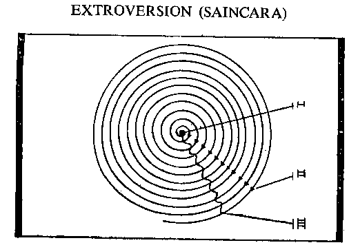
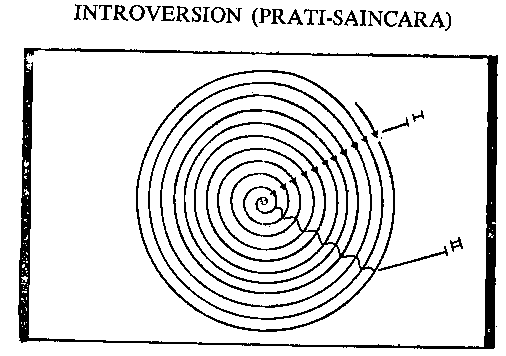

| Ananda Marga Ideology and Way of Life in a Nutshell Part 2 [a compilation] | ||
| Ananda Marga Ideology and Way of Life in a Nutshell Part 2 [a compilation] | ||
|
Kośa means Ádhára or base. Are the Saptaloka (seven spheres) and paiṋcakośa (five sheaths) separate from the Átman (soul)? Is the relation between them that of the container and the contained? If we say; – Eko Brahma Dvitiiya násti. (There is only one Brahma and no other), then of Ádhára and Ádhrta, which is Brahma and which is not? If either the container or the contained is considered as Brahma does that mean that the other is not Brahma? If it is argued that Saptaloka and Paiṋcakośa are the base of Brahma, then the existence of some other entity outside of Brahma has to be acknowledged. For instance, suppose there is a person in a house. The house and the person exist separately. The house is the container and the person is the contained. Hence, the house is separate from the person. In the Paiṋcakosá, Átman is the contained and the Kośa is the container. Clearly the container must be bigger than that which it contains. There is nothing bigger than Paramátman; hence it cannot have a container. Should we then consider that the Saptaloka and the Paiṋcakośa do not exist? Yes, for the Saptaloka is included in Brahma. Their aggregate is Brahma. The Jiiva is included in the Paiṋcakośa. There is a subtle difference between the Jiiva and Brahma. In the Jiiva there are two types of “I” feeling – one is its mind created by Máyá, and the other is [[its knowledge-filled state – the reflected expression of Paramátmá Himself – that is, its (the jiiva’s) jiivátmá.]] Jiivátman is the real “I” feeling of Jiiva or unit soul. Of the seven spheres, Brahma is unaffected only in the Satyaloka and in the remaining six Lokas, Brahma is affected by Máya. It can also be explained in this way, that the six Lokas are created within Brahma which itself pervades the expressed universe as imperishable Brahma. Brahma has no base. Excepting Satyaloka, the remaining six Lokas are created within Brahma, in the very midst of Brahma. Is it the case then that the light is different from its original source? The Saptalokas are its evolution – these are the manifestation of Brahma – the relationship is not that of the container and the contained. The difference between the Jiivátman and Paramátman exists only so long as there is the “I” feeling of the unit soul. (Jiiva bháva).
What is the relationship between Jiivátmán and Paramátman? What is Jiiva (unit soul?) The base of the physical body is the Kośas. Here, the base is bigger than that which is based upon it. The Kámamaya Kośa is bigger than the Annamaya Kośa. Then the Manomaya Kośa is bigger than the Kámamaya Kośa. The Atimánas Kośa is bigger than even the Manomaya Kośa. The Vijiṋánamaya Kośa is larger than this. The Hirańmaya Kośa is bigger than the Vijiṋánmaya Kośa and the biggest of all is the Satyaloka. All of these aspects are limited to the unit soul and all of them are its bases. Now, what is the relationship between the base and the based? The relationship is that of a subject and an object. For instance, the physical body is the object of enjoyment and the mind is the enjoyer. That is, our body is the object of enjoyment of our mind and the mind remains attached to it. The body is the base of the mind and the mind is intimately attached to its base.
Mahattattva is the pure “I” feeling of the subtlest state of the mind. Every Jiiva has this “I” feeling, and where the Átman assumes special “I” feeling it becomes Jiivátman.
Where the Átman remains as the knower “I” of Shyam Babu, it is called Shyam Babu’s Átman. In every living being all the spheres – right from the Kámamaya to the Hirammaya kośa – are to be meditated upon. The knower behind the meditative power of the mind is the Átman. The relationship of the Átman and the mind is that of a subject and an object. The mind is the thinking subject of the body and the Átman is the knowing subject of the mind. Then, are there really innumerable souls and what is the difference amongst them? The difference is that a soul is taken in different aspects due to the difference in its objects. When there is a singular knowing entity (Saguńa Brahma) behind all minds, then taking the collective view Brahma is the knower of all the knowers in the perishable and imperishable states (i.e. within or without the influence of Prakrti) of the Jiiva. Saguńa Brahma is the knower, the perishable and the imperishable. He who is absolutely perishable and absolutely imperishable is Brahma. The fragmentary or reflected perishable, or fragmentary or reflected imperishable is Jiivabháva. Nirguńa is neither perishable nor imperishable. It’s beyond these. It is absolutely liberated. Does Saguńa Brahma (Collective Imperishable) have no influence over the unit imperishable? Most certainly it has.
Kśaraḿ pradháńam amratákśaraḿ harah
Kśaratmáńá vishate deva ekah
Tasyábhidyánád yojanát tattvabhávád
Bhuyaschánte Vishvamáyánivrttih.
Prakrti is mutable and Puruśa immutable. Brahma is overpowering and as the controller He is called Ishvara or Puruśottama. By being absorbed in Him, people get liberated from worldly attachment. How is liberty attained? What is the object of a Jiiva (unit soul)? Suppose I am Ram or Shyam. Now Ram and Shyam look upon the world with their own respective viewpoints. The mind takes the shape of its object. When the mind makes Him its object, it is transformed into Him. By suffusing itself with Cosmic feelings it attains infinitude and sees the entire universe contained in Him. It has been said in the scriptures: “Brahmavid Brahmaeva bhavati.” (The knower of Brahma becomes Brahma.) When the unit “I” is transformed into the collective or Cosmic “I” then the Atman attains oneness by fusing into the soul of the collective “I.” That is, it unifies or becomes one with the Átman of Saguńa Brahma.
In day-to-day life a person maintains his existence in the physical state. Crude matter forms the object of enjoyment of the mind. On account of the crude matter being its object of enjoyment, the mind itself becomes crude. Humankind’s primary concern regarding food and clothes is the concern of Kámamaya kośa and inevitably the mind is in association with crude objects. In such circumstances, how can there be any opportunity for self-elevation? Animals are constantly associated with crude.
Áhárnidrábhayamaethunaiṋca
Sámáyametad pashubhirnaráńám
Dharma hi teśámadhiko visheśo
Dharmenahiináh pashubhih samánáh.
The mental tendencies of appetite, sleep, fear and sex urge are found among humans and animals. So what is the difference between the two? The distinction between humans and animals is that humans have a sense of Dharma. Human beings practise Dharma, but animals do not. A person who does not pursue the path of Dharma in spite of being endowed with the human form is just like a beast.
Human beings advance from subtle to the subtlest or degenerate from crude to the crudest, according to their own propensity. Many isms are based on the Kámamaya Kośa. In one socio-economic theory, the economic factor is the only factor. But the Kámamaya is only one Kośa. Even trees also possess Kámamaya kośa and that is why they derive their vital energy from the earth, water and air. Where the Annamaya Kośa dominates, all the remaining kośas are dormant. The mind identifies itself with crude objects and therefore has no “I” feeling. For this reason, the Átman is also devoid of perception. While the mind is sleeping in the dormant or latent state, it does not permit the Jiivátman, which is but a reflection of Paramátman, to reveal itself.
Confinement to the Annamaya Kośa tends to crudify a person since it does not allow for psychic elevation. There is some scope for discussion of philosophical controversies, which have arisen with respect to the Mamomaya Kośa, On account of mental difference, different philosophical thoughts have sprung up e.g. Buddhism, Jainism, Islam, Christianity, and so on. Only in spirituality do we find discussions on subjects from the subtle to the subtlest, including the Átman. The mind is the object of Átman. To attain Átman, blend the mind with its original subject. Unify the object with the subject. The relationship between them is the same as between you and your hand. There is only one way to self-realisation and that is to fuse the mind with the knower of the mind and eliminate the crude manifestation of the Átman. How is this possible? It is only possible by the introversion of the tendencies, which can be achieved through knowledge and Sádhaná. It is not possible to be introverted until each and every cell (kośa) is realized. When the mind realizes that the physical body is the vehicle of the mind, then you will know that there is progress in Sádhaná. In other words it is necessary to have perfect conception of each kośa and for this it is necessary to know where one kośa ends and another begins. There are two minds – one immature and the other mature; one introverted, the other extroverted. Only the knowledge of these five Kośas (paiṋcakośas) can be the perfect knowledge. Take a ripe mango, for example. Although the pulp and the seed of a ripe mango remain together they are in fact, separate. Ripeness means perfection.
This is the difference between Dharma and Sectism. Dharma makes each Kośa perfect and enables a person to achieve perfection in Sádhaná. Only through the achievement of perfection are different portions differentiated from the original stuff. Sádhaná is based on philosophy and supported by logic. In olden times people were under the impression that the world was comprised solely of matter and they never thought to go beyond the Kámamaya Kośa. Had they contemplated a little deeper, they would have realized that they were totally mistaken. Similarly, many modern philosophies are solely materialistic. Their propounders did not fully apply their minds and hence they cannot be deemed to be perfect philosophies. Only those philosophies which carry us to the highest levels of the soul by observing every current of the mind are the real philosophies. The rest are only academical logics.
What is sectism, mazhab or religion? Some people encourage us to worship idols, others encourage us to have a dip in the Ganges. All these things are created within the mind and are destroyed there. Happiness and heaven, afflictions and hell – all are mental conceptions in the physical world. They are all destroyed in the Mamomaya Kośa. The proponents’ souls are confined to the Mánomaya Kośa and they are “Bhuktaye na tu muktaye”, seekers of enjoyment and not the seekers of salvation.
Some sects hold that happiness comes after death, but who will enjoy that happiness? The mind, of course. But where does the mind go after the destruction of its vehicle – the physical brain? Who will enjoy the pleasures? The Átman pervades as an indivisible form, as an all-knowing entity. There is no Átman in the grave, nor does the question of its waking up arise. In such sectism the Manomaya Kośa is called the soul, however if there is only the soul, then there would be no fear of pain or pleasure.
Anejadekaḿ manaso javiiyo
naennaddeva ápnuvan púrvamarśat
Taddhávato’nyánatyeti tiśthát
tasminnápo mátarishvá dadháti.
Ordinarily sectisms terminate in the Mánomaya Kośa. Idolatry can elevate a person up to the Átimánas Kośa, but no further. Many persons aspire to achieve happiness by devoting themselves to idolatry. They do not aspire to get absorbed in Paramatman and remain close to Him. Buddhism rises above this, since it also provides for the annihilation of samskára. Annihilation of the “I” feelng is called merging into the Supreme. Buddhism does not recognize the soul, but speaks of annihilation of the ego; but who will annihilate the ego? It is the ego which will obliterate the “I” feeling. So egoism then, must be considered as the subtlest expression of mind.
The subtlest expression of mind is in the Hirańmaya Kośa, which is the first expression of Mahattattva. Establishment in this Kośa in a universal manner is Savikalpa Samádhi. When after emerging from the Samśkara, the Hirańyamaya merges in attributeless Brahma, then this is called Nirvikalpa Samádhi. Those who have attained the Kámamaya Kośa will say that it is not proper to steal since, if we steal, others may also steal from us. This is the trend of thought of the materialists. Their thinking is distorted with selfishness. One should not steal for the sake of keeping the mind pure. That is the correct approach.
The Paiṋcakośas shall have to be perfected, but how is it possible? They can be consummated only through the practice of Yama and Niyama. The Annamaya Kośa is perfected through Ásanas (physical postures). Yama and Niyama Sádhana perfect the Kámamaya Kośa. The Manomaya Kośa is perfected through Pránáyáma. Through Pratyáhára the Atimánasa Kośa is perfected. The Vijiṋánmaya Kośa is perfected through Dhárańá and the Hirańmaya Kośa through Dhyána. Only Dhyána Samádhi gives access to the soul. Pious persons are those who are earnest in their efforts to perfect the Paiṋcakośa. Human existence consists of the five kośas and spiritual practice is eightfold. This spiritual practice is Dharma. That which does not provide for the explanation of the Paiṋcakośa is not Dharma, but sectism.
Why is Aśt́áuṋga Yoga called Dharma? The purpose of Dharma is to attain perfect happiness and perfect happiness is the attainment of the soul, there being only partial happiness in each Kośa. So long as the soul is not attained every Kośa has to be perfected. Each Kośa has to be taken care of. One Kośa cannot be perfected to the exclusion of the rest. Where there is perfect happiness there is Dharma. Everything else yields only partial happiness and is therefore sectism. Sectism leads to preya (superficial and immediate gains) and only Dharma leads to Shreya (ultimate and real gains.) Everything else leads to crudeness. Dharma leads to Supreme Consciousness and only that which upholds and sustains the soul is Dharma. The Dharma of fire is to burn and the Dharma of living beings is to attain happiness. Where there is pursuit of Preya there is Avidyámáya. The happiness of heaven and the fear of hell are creations of the mind. Dharma has no fear since through Dharma one attains the original state. Ánanda Márga alone is Dharma and all the rest are sectisms.
All inspiration for a person practising Dharma is derived from Saguńa Brahma through His grace. For this reason one must be indebted to Saguńa Brahma. The person who does not practice Sádhaná is inferior to a tree, for the tree has no capacity for Sádhaná, whereas the person has. The wise avail themselves of this beneficence. Those who do not are ignorant. You have got divine grace and a human frame, so make use of this grace properly. Do not waste this golden opportunity.
Krśna nam harinám baŕai madhur
Jejan kaśńa bhaje se baŕa catur.
Din gela miche káje rátri gela nide
Nábhajinu Rádhákrśńa carańaravinde.
–Narottamdás
You human beings are fortunate that you do not have to live as stones or trees. The entire universe has the grace of Brahma, but human beings enjoy greater grace. They are endowed with the privilege of practising Sádhaná. It is the special grace of Brahma to appear as Sadguru and teach spiritual practice to human beings. Is it not His special grace when Brahma attracts a person?
When one person attracts the Hirańmaya Kośa of another it is termed Brahmavidyá. The one who attracts the Hirańmaya Kośa of a person is the Supreme Guru.
When the Hirańmaya Kośa of one person attracts the Vijiṋánamaya Kośa of another it is termed Daevii Vidya. When the Vijiṋánamaya Kośa of one person influences the Atimánas Kośa of another it is called Gandharava Vidyá. A person with this capacity is also called Madhyama Guru. Such a person awakens the sentiments of Dharma in the mind of the disciple through sweet sounding Kirtan, etc. If the Atimánasa Kośa of one person attracts the Manomaya Kośa of another it is called Rákśasii or Paeshácika (demonic Vidyá. When the Manomaya Kośa of one person attracts the Kámamaya Kośa of another it is Bhuta Vidya or hypnotism. If the Kámamaya Kośa of one person attracts the Annamaya Kośa of another, it is known as the force of physical attraction. Saguńa Brahma graces the living beings with divine grace. You have been blessed. Use it properly and attain the state of Nirguńa Brahma by annihilating the barrier between the subjective and objective angles of vision. The highest object, the supreme attainment, is to attain the Nirguńa state. The aspirant says:
Nivedayámi cátmánaḿ tvaḿ gati Parameshvara.
O human beings, you are fortunate. The clarion call of the Universal has reached you. Not only has the call come, but you are hearing it and it is vibrating in every cell of your body. Will you now lie in the corner of your house as an inert being and waste your time by clinging to old skeletons and bemoaning them? The Supreme Being is calling you in the roar of the ocean, in the thunder of the clouds, in the speed of lightning, in the meteor’s flaming fires. Nothing good will come from idleness. Get up and awake the clouded chivalry of your dormant youth. It may be that the path is not strewn with flowers and that inferiority complex will be attempting to hold fast your each advancing step, but even then you have to proceed onwards tearing the shroud of darkness. You will tear the thick darkness of despair as you advance in the racing chariot radiant with the Sun’s brilliance towards the attainment of the Supreme state.
| Ananda Marga Ideology and Way of Life in a Nutshell Part 2 [a compilation] | ||
|
The word Bhakti (devotion) means worshiping. For worshiping, both the person who worships and the person who is worshiped must be present. Hence as long as there remains a difference between the devotee and God, there is the opportunity and necessity of Bhakti-Sádhaná.
Bhakti signifies longing for the Supreme –
Sa paránuraktriishvare.
The meaning of the word “Paránurakti” should be considered. Rakti denotes Raga or attachment. Anurakti means maintaining attachment with or being attracted by a particular entity after having understood its meaning. Anurakti is of two kinds. The Anurakti for the Supreme Brahma or Infinite Cosmic Consciousness is Paránurakti. The Anurakti for Brahma under the sway of Prakrti or the Anurakti for the crude manifestations is termed Aparánurakti. God is an object for Paránurakti. When the aspirant considers the Supreme Brahma to be his or her own, it is termed Bhajaná or Bhakti.
The two varieties of Anurakti exist only on account of the introverting or extroversial actions of the mind; that is extroversion denotes Aparánurakti, while introversion denotes Paránurakti. The externalizing forces subordinate a person to the sense organs and render him or her crude. Such a person is divested of his or her spiritual force. Paránurakti on the other hand releases a person from the grips of the Indriyas and through sublime meditations establishes him or her in the finer sublimated senses, in the infinite blessedness beyond the bounds of the Universe.
Now the question arises as to whether Bhakti is natural or unnatural for the living beings. All the things we see in the manifested Universe, whether they be conscious or crude, have attraction for one another. This attraction is the Dharma of the created Universe and as a consequence the continuity of the thought projections of the Cosmic Mind is maintained. Therefore, I say that attraction is natural for everything. It is due to the attractions for one another amongst myriads of heavenly bodies oscillating in the infinite space that balance is maintained in the firmament. In every planet or sub-planet, there is the effort for self-preservation. People run and assemble at a place which yields good water, good fruits and fertile lands, because they find adequate materials for self-preservation. The bee flies around the flowers in quest of honey for the sake of preserving its existence. Every entity runs more towards that which is more lasting and secure and which will provide it with greater and longer safety. People run after money because they believe that they can maintain their lives under the shelter of money, that money alone can save them. They do not know that money can provide neither a permanent stability nor securely founded shelter. During the span of one’s life money will come and go several times. At times its glamour will dazzle our eyes and at other times the lack of money will make one cry from hunger. Not only money, but all finite objects have this characteristic. One uses finite objects with the intention of enjoying only one of their portions, then sooner or later the residue will be reached. That which is finite cannot permanently remain the object of your enjoyment or your permanent resort. The existence of all these things is dependent on other things – bounded by the limits of time, place and person.
In philosophical terms the attraction for finite objects is called Ásakti and the attraction for the infinite is Bhakti. Rága or Rakti means both the attraction for the infinite and attraction for the finite objects. “Sakasmae parampremarúpá,” that is, Bhakti is the symbol of love and this love is dedicated towards Iishvara, signified by the letter “ka”. In the vedic language the letter “Ka” means God. God is indescribable. God is the nucleus of the Universe and is supreme love personified.
Sa iishvara anirvacaniiya paramapremusvarúpah.
Puruśa and Prakrti. Where a change in Puruśa occurs on account of the influence of Prakrti, the mind comes into being. The senses and organs are the recipients and the vehicles of the workings of the mind; so the mind is the worldly knower or subject of all worldly acts. The mind is the object of the untainted knowing Puruśa, and Puruśa is its subject or knowing self. When the mind as an object merges into Puruśa as the subject, distinction between the object and the subject ceases to exist. This is the supreme state of the aspirant. However when the mind is guided by Avidyá, that is, when it a seeks enjoyment in the finite objects, then, that externalized energy of the mind is ultimately identified with the crude object. This is so whether this object is a creation of the mind itself or is taken from the crude quinquelemental world.
If the terrific speed which the extroverted person runs after the finite objects is introverted towards the Supreme Being, then he or she can attain Brahma and achieve the Supreme State. The devotee recites:
Yápriitiravivekináḿ viśayesvanapáyinii
Tvámanusmaratah sáme hradayán mápasarpatu.
–Viśńupuráńa
That is, O Almighty, may the attraction which ignorant people bear towards the objects of their mind become an eternal love for thee, through Thy remembrance.
Pure Bhakti cannot be based on finite objects since the very existence of finite objects is derived from extroverted feelings. Nevertheless, I painfully observe that many people confine their love and devotion to finite objects and as a result they do not attain the pervasiveness which love confers. They do not realize that every tiny atom of this vast universe is a creative manifestation of Cosmic Consciousness – God’s grand expression. They spend millions on the installation of idols and do not relent on seeing the afflictions of suffering humanity. They don’t hesitate when killing in cold blood a young goat for the so-called satiation of a goddess.
Vistárah sarvabhútasya Viśńorvishvamidaḿ jagat;
Draśt́avyamátmavattasmádabhedena vicakśańaeh.
–Viśńupuráńa
The world is a changing phenomenon. Therefore, it is unwise to be attached to any object in this ever-changing world. The name and form of objects undergo changes with the change in time and place. The child changes into a youth, the youth into an old person, and the old person into a dead person. Wise people take every object of the world as the expression of one and single Viśńu and are not be affected by pain or pleasure when they witness changes in the name and form of any particular object. Viśńu to them remains Viśńu and they lose nothing.
While practicing Bhakti a person proceeds with feelings ingrained in their saḿskáras, because they derive pleasures out of them. However to proceed in accordance with the saḿskáras will not perfect an aspirant in pure Cosmic feeling.
Bhaktiyogo bahuvidhaermargaerbhávini bhávyate
Svabhávaguńmárgena puḿsaḿ bhavo vibhidyate.
That is, the methods and kinds of Bhaktiyoga, are manifold. A person adopts the process of Bhakti sádhaná according to his own propensities.
Támasika Sádhaná – Saḿskáras inherently for their own implications are Tamoguńii (static) but they manifest according to the past acts, which are sometimes dominated by Rajah (mutative) and sometimes by Sattva (sentient). An aspirant is called Támasika when instead of being drawn to the Rájasika or Sattvaguńii splendors, he or her practices Bhakti after having immersed their Tamoguńii existence in the static force.
Abhisandháya yo himsáḿ dambhaḿ mátsaryameva vá
Saḿrambhi bhinnadrkbhávo mayi Kuryat sa támasáh.
Persons craving for finite pleasures instead of the supreme bliss, under the influence of violence, arrogance or jealousy are Támasika Sádhakas. From amongst the Támasika seekers there are some who do not forget the Supreme even after the realization of their object. Such persons had Rájasika and Sáttvika tendencies in dormant states and in fact were not Támasika Sádhakas.
Rájasika Sádhakas – Those performing spiritual practices with the object of attaining a particular finite object are called Rájasika, The characteristic of Rájasika Sádhakas consists in their being engrossed in realizing their selfish ends and, not in causing detriment to others.
Viśayánabhisandhyya yasha aeshvryamevabá
Arcádavarcayed yo maḿ prthagbhágvah sah rajsah
–Bhágavata
Those worshiping the lord in the crude way with flowers and the trifoliated leaves of Aegle marmelos, worship for the sake of worldly objects, fame or wealth. In fact they long for those objects and not for the Lord. They are Rájasika Sádhakas. A few out of these Rájasika seekers do not forget the Supreme Brahma. Even though they are Rájasika seekers, they have sáttvika feelings to a significant degree.
Karmanirhármuddisya parasmin vátadarpańam
Yajed yásti vá prthagmha sah sáttvikaśh
Those who pursue their practice with the prayer “O Lord, may my Karma be annihilated. Emancipate me from the cycle of Karmas” and those who pursue their practice as their duty or for the fear that people may decry them if they do not do so, are classed as Sáttvika Sádhakas. They are Sáttvika Sádhakas, in as much as they do not seek attainment of the Supreme. However, this Sáttvika Sádhaná is not a superior degree of Sádhaná or the Supreme Sádhaná, because none of the above control the energies of the aspirant and direct them towards the adored, the Supreme Brahma. The aim of the aspirant is channelized in a different direction and he or she carries on with an inferior object. All the three such Bhaktas – Sáttvika, Rájasika and Támasika are Gaońii or inferior Bhakti. Where there is no object other than the Supreme Brahma, it is called Mukhya Bhakti. In Mukhyá Bhakti There the aspirant is free from the three guńas. He or she is absorbed in spiritual practices to Nirguńa Bhakti. In general then, Bhakti can be classified into many groups according to the object in view.
Nirguńa Bhakti: Here the aspirants have no other object. They take themselves towards the Supreme Brahma only by the urge of their own spirit. If questioned as to why the love Him and devotes themselves to Him they say: “Oh, why do I love? I do not know. I love Him just because I like to love Him. Should I not love? He is the life of my life the soul of my soul”. This type of Bhakti is Nirguńa Bhakti.
Vaedhii Bhakti: Where there is no undivided Bhakti for the Lord and the object is only to give a show to others. Today there is a particular festival, the floor will have to be besmeared with cow dung in this way, the Ganges water will have to be sprinkled, the idols will be decorated in royal fashion or in the fashion of a child, the mantras will be chanted, the flowers offered, the leaves of Aegle marmelos will be offered in this way and so on. Such devotions practised within the bounds of externalized usage and rituals is called Vaedhii Bhakti.
Yatra rágánaváptatvát pravrttirúpajáyate;
Shásanenaeva shástrasya sá vaedhii bhaktirucyate.
Rágahiin jana bhaje shástrer ájiṋáy;
Vidhibhakti bali táre sarva shástre gáy.
Támasikii, Rájasikii and Sáttvikii Bhaktis affected by the three Guńas are Vaedhii Bhaktis.
Jiṋánamishra Bhakti: If the Sáttvika Sádhaka does not forget the adored even after realization of his or her object, then gradually the Supreme knowledge shines forth within his or her mind. This attainment is known by the name of Jiṋánamishrá Bhakti. This Bhakti also may be classed as Nirguńa Bhakti, but due to the dormant vanity for wealth or knowledge, the supreme state is not attained. This is also called Pradhánibhuta Bhakti. Pradhánibhuta is the highest stage of Gaonii or inferior Bhakti.
Kevalá Bhakti: If aspirants from the very outset instead of devoting themselves to Saguńa Bhakti, realizes the permanence of Nirguńa Bhakti, the questions like “What have I attained”, “Why do I wish to attain?” etc, do not arise in their mind. This is the culmination of Bhakti, it is the highest pitch of Bhakti. If there is undivided knowledge with the object, then there exists one and only one entity, and that is why it is called Kevalá Bhakti. Kevalá Bhakti is not attained by baths, exercises or austerity. Those who have not been blessed with the Divine Grace, even to a small extent, cannot have any realization about it.
Mahat krpayaeva Bhagavad Krpáleshád vá.
The position of Kevalá Bhakti is by all means superior to the Gaonii Bhakti. That is why it is called Mukhyá Bhakti. Whatever progress an aspirant may achieve in Gaońii Bhakti, the distinction between the adored and the adorer, or between the infinite and the finite remains with them till the end. This aspect is known as Mahim Jiṋána in the scriptures. In the presence of Mahim Jiṋána the devotee feels shy in merging in the Supreme Brahma.
Rágátmika Bhakti: There is no Mahim-Jiṋána in Kevalá Bhakti. In this the aspirant runs to get close to the adored with all the zeal of his or her life. They consider the adored to be the life of their life and the soul of their soul. They have no time developing any distinction between the adored and the adorer or the infinite and the finite. The aspirant does not consider himself or herself to be the adorer of Rama but rather the personification of Rama. He or she loves to love, and cannot remain without loving because he or she entertains only this feeling.
Iśt́e svárasikii rágah paramaviśt́atá bhavet
Tanmayii yá bhavet bhakti sátra rágátmikoditá.
The first stage of Rágátmiká Bhakti is known as Rágánugá Bhakti.
Rágátmikámanusrtá yá sá rágánugocyate.
Rágánugá Bhakti molds the aspirants mind into the form of Rágátmiká. The dualistic aspirants who deserve the Rágátmiká Bhakti aspire to be close to Brahma and feel His presence, rather than to merge in Him. This is the zenith of Rágátmika. They do not like to become sugar, rather they love to taste it and say that if they get transformed into sugar, then how would they realize the taste of sugar. The dualists call this stage Gopiibháva or Vrajabháva.
Sei gopii man yár bhávámrte yáy;
Veda-dharma tyaji sei Krśńake bhajay.
It has to be borne in mind that the original meaning of the word “Gopa”, i.e. a milkman, is not applicable. The word “Go” means the sense organs. Only the one who sustains and controls the Indriyas is Gopa or Gopála. The word Gopála also means “giver of bliss”. This Vrajbháva is the proximal stage of Kevalá Bhakti. It is different from Jiṋánamishrá Bhakti since there is no vanity for knowledge nor the show of riches. This devotion cannot be attained through Vaedhii Bhakti.
Sakala jagate more kare vidhi bhakti;
Vidhi bhaktye Vrajabháva páite náhi shakti.
In Ananda Marga, there is no place for Vaedhii for or Jiṋánamishrá Bhakti. Ananda Margis are aspirants of Rágátmika Bhakti, and therefore, they do not desire to terminate their journey in a state of Vrajabháva, whatever else there may be in dualistic Vrajabháva, there is no expression of due reverence for the wish of Brahma or His introversive phase of the creative cycle. Why do people fail to realize the nice opportunity which His grace has offered them? Why will they not merge their “I” feeling into the immortality of the Supreme? By enjoying the bliss of divine attainment as a separate existence the unit mind and all the sense organs shall have to be controlled. Wherever the mind is with the Indriyas, there the apprehension of deterioration exists. That is why the Ananda Margis do not accept staying in Gopiibháva.
Bháva: For the exposition of Bhaktitattva, the use of the word Bháva is indispensable. What does Bháva signify?
Shuddhasattva visheśádvá premasúryáḿshu sámyabhák;
Rucibhishcittamásrńya krdasao bháva ucyate.
–Shrirupa Goswami
Bháva is that whereby the Citta or mind-stuff becomes purged and is chiefly dominated by Sattvaguńa. Where all the ten directions become brilliant with the rays of the sun of love and the taste or anurakti for the Lord gets enlightened, then the Citta develops oneness with Him. As a result of this Bháva, human beings direct their natural attractive tendencies towards the adored. The adored, however is not outside them, but is the life of their life, the mind of their mind and the life master of their entire existence. When this feeling of devotion for the adored awakens the introversion of one’s tendencies, then one becomes absorbed in this Bháva. One attains the state of realizing the self. In Vaeśńava philosophy this running into one’s own self is known as Hládinii Shakti because in this path there is a progressive refulgence of the light of mellifluous realizations.
When there is fear or feeling of crude propensities in the mind, there cannot be pure Anurakti or Bhakti. Devotion generated through fear is no Bhakti at all, rather it is but a lamentable state of mental crudeness. Some pray to the Lord for fear of hell and some for fear of torture and retribution in the next life. They hunger for emancipation from these fears. This betrays a lack of knowledge of the truth and you should not give encouragement to this inferiority complex. Those who accept or know the Lord as their own self have no reason to entertain any fear of Him. This fearless movement towards the Lord is termed Love.
Samyauṋmásrnito svánto mamatvátishyánkitah
Bháva sa eva sándrátma budhaeh premanigadyate.
–Shrirupa Goswami
When the mind attains Supreme serenity and a feeling of affection is developed for all beings then this is eternal peace and the sages call it love. Love cannot be developed for anything mean or finite.
Atmendriya priiti icchá táre bali káma;
Krśńendriya priiti icchá dhare prema náma.
Kámera tátparya nija sambhoga kevala;
Krśńasukhaváiṋcá haya premete prabala.
Love and passion are mutually antagonistic tendencies. The attachment for a finite thing is an expression of extroverted energy, whereas the attraction for the Infinite is an expression of the introverted energy. That is why these two can never co-exist. Therefore the aspirant has to skillfully to transform passion into love. Do you love your son? No, no you don’t love your son. You love Brahma in the form of your son. By loving your son as a son, you cannot love the Lord. Where there is the feeling of son, there is no Lord and where there is the Lord, there is no son. Where you exist He does not and where He exists you are no more.
Yáṋhá kám táṋhá nehi Rám;
Yáṋhá Rám táṋhá nehi kám
Dono ekatra nehi milae,
Ravi rajanii ek t́hám.
Bhakti is of eight kinds: two kinds of Támasika Bhakti, two kinds of Rájasika Bhakti, two kinds of Sáttvika Bhakti, Jiṋánamishrá Bhakti and Kevalá Bhakti. Previously I said that of these eight kinds, Kevalá Bhakti is the supreme. However, Bhakti of any kind is of greater value than no Bhakti at all, because Bhakti regulates the flow of the human mind in one direction.
Ast́ávidháhyeśá bhaktiryasmin mlecche’pi vartate
Sa viprendro munih Shriimán sa yatih sa ca pańd́itah.
A devotee of any of these eight kinds of Bhakti, even though he or she is thoroughly engrossed by superstitions should be considered as a high-ranking Bráhmana, a sage, an ascetic or an erudite.
Cańdálo’pi dvijashreśt́hah Haribhaktiparáyanah
Haribhakti-vihiihnashca vipro’pi shvapacádhamah.
Muci haye’ shuci hay yadi Hari bhaje;
Shuci haye’ muci hay yadi Hari tyaje.
There is no distinction as to one’s eligibility for the Bhakti Sádhaná. All beings endowed with the human frame are eligible for this Sádhaná.
Ánindyayonyadhikryate.
From the worldly standpoint even those degraded castes are entitled to do Bhakti Sádhaná. The great sage Nárada said.
Násti teśu játividyárúpakulakriyádi bhedah.
The highest attainment of Bhakti is the attainment of the Supreme, but in the mind-stuff of the devotees of Vaedhii Bhakti a desire for the pleasures derived from objects is greater than a desire for the supreme Bliss. Just as a mother diverts a crying child by offering a toy, so too the devotees of Vaedhii Bhakti are as if deluded with toys. The mother is obliged to disengage herself from other jobs and embrace the child who throws off the toy. The devotees of Kevalá Bhakti are shrewd like those children. There are three grades of devotees.
1. SUPERIOR DEVOTEES
Shástreyuktao ca nipuńah sarvathá drd́ha nishcayah
Praod́hoshraddho’dhikárii yah sa bhakta uttamomatah.
Those versed in the spiritual scriptures and competent in practices and of firm mind are the devotees of the highest degree.
2. INTERMEDIATE
Yo shástrádiśvanipuńah shraddháván sa tu madhyamah.
Those who have reverence, but have no knowledge of the scripture, are intermediate type of devotees.
3. INFERIOR
Yo bhavet komalashraddhah sah kaniśt́ho nigadyate.
Those who are neither erudite nor earnest are the wretched devotees. Rágamishrá Bhakti or Kevalá Bhakti is attainable only by the highest category of devotees. They alone attain the pervasive evolution of their soul. That is why in the scriptures Nirguńa Bhakti is called the “Puśt́i Márga” while other routes are termed “Mayádá Márga”.
The more the aspirants of Kevalá Bhakti advance toward their Iśt́a the more they remain oblivious of their little self and attain the qualities of Iśt́a
Mádhava Mádhava anukhana souṋari, sundarii Mádhava bheli.
While constantly ideating on Mádhava, Radha calls herself Mádhava.
The devotees of Kevalá Bhakti perceive only Brahma. To them the entire universe is Brahma to them all activities excepting Brahma Sádhaná are insignificant and valueless.
Rám nám ek auṋka hae sab sádhan hae shúńa;
Aunk binu kachu hát nehi aunk rahe dasha guń.
Therefore, O devotees remember the Lord’s name else all your efforts will be reduced to cipher. Under all circumstances and during all activities, cling firmly to His name. The Dharma of your childhood is to read and practice Brahma Sádhaná. The Dharma of youth is to earn money and practise Brahma Sádhaná. The dharma and of your old age, when you become incapacitated for all physical activities, is only to practise Brahma Sádhaná. Prahláda says:
Kaomára ácaret prájiṋo dharmán bhágavatániha
Durlabhaḿ mánuśaḿ janma tadapyadhruvamarthadam.
The wise practise Dharma Sádhaná right from infancy because a human life is rare and rarer still is the human life perfected through Sádhaná.
Brahma is the dearest of the true devotees and therefore, every item and everything related to Brahma is dear to them.
Yei nám sei Krśńá bhaja niśt́ha kari;
Námer sahit áchen ápani Shriihari.
The true devotees love the world, the society and everything around because they perceive each and every manifestation of the artful Prakrti with one universal spirit. They also love the finite, since it is also a portion of the Universal. They perceive worldly pleasures as divine bliss varied by time, place and person. They keep their mind-stuff absorbed in the eternal currents of the divine flow. Such devoted aspirants are the only true enjoyers or rasika and their object of enjoyment is the Supreme Brahma.
The Veda says: Rasah vae sah.
Only the knower of the Supreme Nectar is the enjoyer. If the divine bliss is viewed with a vile selfish motive, it turns into poison. If viewed with expanded vision, then it is attained in terms of divine bliss. Those who enjoy the Supreme Eternal are alone the true enjoyers, the true aspirants.
Poet Candidasa says:
Rasik rasik kahaye sakale rasik kehai nay,
Bháviyá gańiyá bujhiyá dekhle kot́ite got́ika hay;
Jemati diipiká ujare adhiká bhitare anal shikhá,
Pantaunge ásiya paŕaye ghuriyá maraye pákhá.
Jagat juŕiyá temati ghuriyá kámánale puŕi’ mare;
Rasajiṋa ye jan se karaye pán viśa cháŕi amrtere.
The aspirants of Bhakti should surrender their all to their adored. Everything objective is centered inside the mind. Hence if the mind itself is surrendered to Brahma, everything automatically becomes surrendered.
Ratnákarastava grhaḿ grhinii ca padmá
Deyaḿ kimapi bhavate Puruśottamáya
Ábhiiravámanayanápahrtámánasáya
Dattaḿ manah yadupate tvamidaḿ grhána.
Oh, Lord, the Universe is Your abode, the Supreme Prakrti herself is Your consort. You have everything. Then, O Puruśottama, what will I offer to You? O yes, I remember one thing. Your true devotees have stolen away Your mind. That is why You have need of one thing. Your mind is lost O Lord, and I offer my mind to You. Do grace me by Your acceptance.
| Ananda Marga Ideology and Way of Life in a Nutshell Part 2 [a compilation] | ||
|
A finite entity requires a base for its existence. The base shall not only preserve its “I” feeling in physical form, but it shall also nourish the same every moment with vital energy for that entity. The subtle entity requires a base in exactly the same manner as a physical entity – the base is simply the subtle form of the physical entity.
The subtle entity with which we are always intimately concerned is the mind. The base or vitality of the mind is the collection of objects which have been contemplated, accepted or discarded. These objects in their basic states are external physical, but the mind enjoys them in their internal impression, as mental forms.
The mind of a certain individual enjoys a particular finite object either for a long time or slowly according to its saḿskáras. After enjoying a particular object just for a short time it wants to turn to another. The mind cannot forever enjoy any finite object because the finite objects have both a beginning and an end. In that eternal movement, that which has a beginning certainly has an end too. You will not be able to enjoy it for all time. The long hands of death certainly will snatch it away. People fail to comprehend this. They treat those things as pleasant which, according to saḿskáras, they retain in their mind for some time or which they enjoy slowly. They treat this slow speed as pleasure and call it happiness.
The minds of some people remain absorbed in the thought of money for a long time. They surrender the fragrance of their lives at the altar of money. Others treat the achievement of fame or having a child as the principal object of their lives. They do not hesitate to lay down their life to have a son or to achieve fame. When the mind cannot enjoy a particular object for a long period, or enjoys it hurriedly, then such an experience is called a painful experience or pain. For example you cannot look at a decomposed corpse for a long time. Similarly, after a brief talk you will dispose as quickly as possible of a person who causes you pain.
Therefore, whether an object is pleasant or painful, its finiteness cannot be your permanent object. You and that object are bound to separate. The mind is needed for one’s preservation and for its own preservation the mind needs a safe shelter, as can hold it throughout eternity. Human beings always crave for a safe shelter. Is it not so? Will you build your house on quicksand? No, you will construct your house on the firm foundation of solid earth.
People always seek a solid base to preserve their mental potentialities till eternity and to give them vital energy in the struggle with temporal factors. Is there a solid base in this world? That which is finite cannot be the base of your life, because it will be used up and will leave your mind unsheltered. Thrusting you in the abyss of darkness, it will pursue its course on the unending path. Therefore, no one except Brahma, the beginningless, endless and infinite can be the object of your mind and the base of your life. How then in this manifested Universe, where there are multitudes of finite objects can we start a life based on Brahma? The answer is that you adopt Madhuvidyá. Instead of seeing the finite and superficial objects as finite look upon them as the finite expressions of the Infinite or the permanent. Then the attraction for Preya and love for Shreya shall all fuse into one.
Vishvajaner páyer tale dhúlimay ei bhúmi,
Sei to svarga bhúmi;
Sabáy niye sabár májhe lukiye ácho Tumi,
Sei to ámár Tumi.
–Rabindranath Tagore
Do you love your son? It is perfectly right that you should, however, when the son dies, you will experience great pain. Is it not so? The son is Preya, a finite entity. He cannot live till eternity. He will depart and make you weep. But if you treat your son as the expression of Brahma in the form of your son, then you will never fear losing him because Brahma cannot be lost in any span of time. He is present around you in all the ten directions.
Eśa ha devo pradisho’nusarváh
Púrvohajátah sa u garbhe antah;
Sa eva játah sa janiśyamánah
Pratyauṋjanáḿstiśt́hate sarvato mukhah.
–Shruti
O Human beings, in that state, no finite object can colour your mind. You will be beyond all colours or Varńátiita. Then you will be able to give proper treatment to any finite being that you may come in contact with. Give proper treatment to the expression of Brahma in the shape of your father by serving him and paying attention to his comforts. Give proper treatment to the expression of Brahma in the shape of the earth by cultivating it and increasing its fertility. If you give such proper treatment to the different objects, they will not be able to degrade your mind. This is called true Vaerágya.
Vaerágya does not denote renunciation, desertion or escaping to the Himalayas after leaving one’s spouse, child and family. Ananda Marga staunchly opposes such an escapist mentality. According to Ananda Marga, the practice of Dharma by means of Vaerágya is a part of family life. Those who harbour the sentiment of running away and leaving everything behind are labouring under a defeatist complex. The thief, who for fear of the police, the debtor, who for fear of the creditor, the afflicted, who for inability to put up with afflictions, are all amongst those who take recourse to the so-called Vaerágya. Such Vaerágiis do not have the fortitude to face the setbacks of this world. They try to hide their cowardice under tall talks. Even when they accept the order of the so-called Vaerágya, the worldly attractions do not abate in their mind. Therefore, pursuing an incorrect interpretation of the term, they insistently practice Tyága (abnegation). Consequently most of them fall from their path.
“Vaerágya” is derived from the word virága. The word “Rága” denotes attachment. The practice whereby we develop detachment from finite objects, i.e. the discipline whereby the mind is not influenced by the attractions of worldly objects is Vaerágya Sádhaná. The true Cosmic Entity is only revealed to people with this Vaerágya. This Cosmic Entity alone is the basic shelter of the human beings. It is a strong foundation which shall not, at any time forsake them leaving him forlorn. In this very Cosmic shelter you can establish yourself fearlessly for all time to come.
Bhoge roga bhayaḿ guńe khala bhayaḿ, rupe tarunyá bhayaḿ;
Kule cyuti bhayaḿ máne daenya bhayaḿ vitte nrpáládbhayaḿ.
Bale ripu bhayaḿ, shástre vádiibhayaḿ, káye krtántád bhayaḿ;
Sarvaḿ vastu bhayánvitaḿ bhuvi nrńáḿ vaerágyamevábhayaḿ.
| Ananda Marga Ideology and Way of Life in a Nutshell Part 2 [a compilation] | ||
|
Paramártha is that by which the worldly afflictions are alleviated completely and the effort to attain this Paramártha is Sádhaná. Where the Átman is free from all objects, that is, free from all types of afflictions, it is called Paramátman. As long as the aspirant maintains dualistic feelings, then he or she will say that sádhaná is the process whereby Átman and Paramátman are unified.
Are Átman and Paramátman two independent entities? No, it is not so. Jiivátman, which is bound by its saḿskáras, moves about in the universal waves subject to the changes of birth and death. It does not attain the supreme bliss of its original form. However, it becomes Paramátman the moment it eliminates all its saḿskáras through sádhaná and the efforts of the indwelling unit mind. No difference remains between Átman and Paramátman except that caused by the saḿskáras.
Dvá suparńá sayujá sakháyá samánaḿ brkśaḿ pariśasvajáte
Tayoranyah pippalaḿ svádvattyanashnannanyo bhicákashiiti
Two pretty and identical birds are dwelling in a single tree. One of them tastes the delicious fruit of the tree and the other witnesses it. This is a wonderful Vedic allusion. Here, the bird tasting the fruit is alluded to as the Jiivátman, and the bird which is only witnessing is alluded to as Paramátman. The underlying meaning is that the unit soul is the entity which enjoys all the fruits and Paramátman is the witnessing entity to all the actions and reactions in the world. Jiivátman is under the influence of Prakrti, it is Máyádhiina or controlled by Máyá, whereas Paramátman, in whatever form He may manifest Himself is Máyádhiisha or Controller of Máyá.
Paramátman is the only Supreme Entity. Sat and Satya are equivalent words. Satya is that which is unchangeable. Every finite object is transmuted by the influence of time, space and person, that is, it suffers from consequences, but Satya does not undergo changes in accordance with changes in time, place and person. There are different kinds of customs and rituals peculiar to different climates. On account of the changes in the climates none of these can truly be called Satya. An incident which one day appears as a reality and is considered true, may on the following day be found to be incorrect and far from the truth. Thus it is found that what appeared to a person’s mind as a fact in the past is unreal in the present and what appeared, as unreal in the past assumes a real aspect in the present. Hence none of these worldly realities or unrealities are permanent truths. A single fruit is known in a particular place as a sweet fruit, while the same fruit in another land is a sour fruit due to changes in the soil. A particular object appears to the general public as white, but to the jaundice patient it appears yellow. None of the objects of the universe can be a permanent reality on account of their dependence on time, space and person. Brahma alone is the eternal reality beyond the influence of Prakrti, that is beyond the mind. His abode is certainly above the bounds of time, place and person.
In this manifested universe all the things that we treat as real at first sight are in fact relative truths. All of them bear Svajátiiya or homogeneous, vijátiiya or heterogeneous and svagata or self-differentiations. Relative objects are only identifiable through these differences. A tree, for example, is heterogeneous or vijátiiya to the houses, hills, rivers etc. and amongst the trees there are homogeneous or svajátiiya differences – the mango tree, jackfruit tree, palm tree, etc., and amongst the mangoes, there are differences in varieties – langra, bambai etc. And there are also self or svagata differences in the trunk, branches, leaves etc. of each mango tree. Paramátman is a universal entity and is therefore above these three-fold differences.
This visible world is the mental manifestation of Brahma. He is an unparalleled and all-pervading reality. It has been said in the Shruti:
Sarvaḿ khalvidaḿ brahma tajjalán.
All is Brahma. Everything in the universe has been created by Him, is sustained in Him and absorbed in Him. Tantra also confirms this:
Yato vishvaḿ samudbhútaḿ yena játaiṋca tist́hati
yasmin sarváńi ltiiyante jineyaḿ tad Brahmalakśańaeh
The word Brahma means Great. It is not sufficient simply to call Him Great, since Brahma is He who has the power of making others also great. Through His grace the living beings become absorbed in thoughts of Him and attain Him, that is, Greatness.
Brhattvád Brahma, Brḿhańatvád Brahma.
Yatra nányat pashyati nányacchrńoti nányadvijánti sa Bhúmá.
When a person attains that stage, then they cannot see, hear, or feel anything, they attain the rank of Brahma. But ordinarily people do not attain this state since worldly glamours keep their senses engrossed with different objects. In order to be free from the objects they have to undergo special processes. Where there is an object, the feeling of Brahma is not there. Humankind as a whole has to undergo certain disciplines in order to be free from the objective feelings. These disciplines are termed “Sádhaná.
Human beings are more conscious than all other creatures in this world, but they are also more engrossed with worldly attachments. Through intellectual powers humans invent new items for the sake of achieving pleasure, but everything manufactured is the object of intellect. It is only when these products of intellect present an impediment to the realization of happiness that people make an effort to realize the true knowledge. True knowledge is unchangeable. In the course of one’s research, one finds Brahma at the origin of everything and becomes prepared to attain Him. This is called “Sádhana”.
It is said in the Kathopaniśada,
Návirato dushcaritánnáshánto násamáhitah
Náshántamánaso vápi prajiṋánenaenamápnuyát.
That is, so long as human beings fail to tranquilize their mind by detaching themselves from their desired acts, and thereby purifying their inner self, till then, regardless of how much they may study, they cannot attain Brahma.
There is reason behind whatever we say, because thoughts take their origin in Citta and the mind transforms them into action with the help of the Indriyas. The Indriyas work when the mind works; when the mind does not want to do anything, the Indriyas are also inactive. It is said in the Shástra:
Mana eva manuśyánáḿ kárańaḿ bandhamokśayoh
[Mind alone is the cause for the bondage or emancipation of human beings.]
Thus, the mind is behind all our activities, whether we direct it towards worldly objects or towards Brahma. No action is possible without the mind. The mind has infinite potentialities and controlling these infinite potentialities is sádhaná.
Though the mind is very powerful it has one serious shortcoming. It cannot think of two objects concurrently.
Whenever it thinks it has one single object. Nevertheless the speed of the mind’s action is baffling. While concentrating on a particular work we may also hear others about us [[talking]]. This is due to the fast acting power of the mind, which leads us to believe that the thought currents of the mind are unbroken. For example, while witnessing the pictures in cinema, we also enjoy the dialogue. The activities of the mind can be understood by diligently applying the mind and we see that the mind can do only one thing at a time. Therefore worldly acts and meditation on Brahma cannot be done simultaneously. It is impossible that on one side humans will remain bound up with passion, anger, avarice etc. and on the other, will worship Brahma. The mind must be sanctified for the worship of Brahma. Apathy towards worldly objects through mental purification is not our goal. Living on this world we can[[not]] be apathetic with regard to the world. Our object is to act, but our actions will be such that they will not bind us to the object. Many persons ask: Since both good and bad are causative for bondage, then surely inactivity is to be preferred? No, this is not feasible. So long as we maintain our body we cannot be absolved from action. We must act, whether we will like it or not. Until death we will have to perform the act of respiration.
No attachment to worldly objects will be developed if we observe Yama and Niyama, since every item of Yama-Niyama is part of Brahma Sádhaná through worldly deeds. Hence when you are able to perfectly observe the spiritual practice of Yama-Niyama, your mind becomes absorbed in Brahma – the ultimate goal of this spiritual practice. For example, suppose a woman is extremely occupied in earning money. For her nothing remains in the world except money. In the same way for the aspirant who is absorbed in Yama-Niyama Sádhaná and dedicated to the attainment of Brahma, there is nothing but Brahma. The life of the person devoted to earning money becomes like a desert because everything except money is alien. But the aspirants of Brahma cannot call anything alien since everything is Brahma.
According to the beliefs of the human beings, Sádhaná is not practicable in normal life and it is necessary for an aspirant to sever connections with the home and members of the family. This is fallacious. How can a sádhaka devote himself to Brahma when he cannot even support the four or five members of his family? A person is associated with a family right from birth. Every family is beset with one problem or another. If instead of solving the problems, you leave your home and live in solitude, will you then forget about these problems? Furthermore, while in solitude you will have to think for your food and clothes. Sádhaná is possible only through this physical body, and for the sake of sádhaná it is useless to create unnatural situations by forsaking the home. We can practise sádhaná by practising restraint in whichever situation we are placed. The only thing necessary for practising sádhaná is an ardent desire for it.
We should strengthen ourselves by remaining in normal situations and endeavouring to become superhuman. By developing superhuman powers we can awaken the element of eternal humanity amongst us. This eternal human entity alone is Brahma. In order to attain this power, meanness must be shunned, because this is the sádhaná for the Infinite. Feelings of differentiation are a great impediment. The feelings that a particular person is a Muslim, another a Hindu, yet another a Brahman and the fourth a Vaeshya come from mean thoughts. When every living being is a manifestation of Brahma, how can you know yourself, without shedding these differentiating feelings? No one is high and no one is low. Of course, according to one’s virtues and vices one is happy, one is miserable, one is rich, someone is poor, one is a fool and another is erudite, but all human beings. Differentiating feelings are the principal obstacles in the path of sádhaná and an elevated position cannot be attained without annihilating them. There is a story in the Mahábhárata.
Both Yudhisthira and Duryodhana had invited Lord Krśńa to their respective houses for dinner. While on his way there, Shrii Krśńa entered the house of Vidura. At that time the great Vidura was not at his house. Vidura’s wife was of very limited means and became nervous on the sudden appearance of Shrii Krśńa. She did not know how to give a proper reception to Lord Krśńa and there was no food in the house except bananas. Therefore, after washing His feet she seated the Lord and began to skin the bananas, and feed Him as she inquired about His welfare. Meanwhile the great sage Vidura returned home. He saw the Lord Krśńa sitting and his wife, fully absorbed in feelings, feeding Him the skins of the bananas. Krśńa was eating so happily, that it seemed as if He had never tasted a more delicious food. Vidura was greatly pained to notice the folly of his wife and asked: “What are you doing? You are feeding banana skins to the Lord instead of bananas.” Vidura’s wife was taken aback and started apologizing for her faults. Vidura also implored. “O Lord, Thou hast taken a good many banana skins; do kindly oblige this poor woman by taking a few bananas.” But the Lord said, “Vidura! My stomach is full now. These banana-skins had such an exquisite flavour that there could be no superior food. So long as your wife, forgetting all differences, was feeding me, ‘I’ was there, but now that the difference between the banana and its skin has intervened, ‘I’ is not there.” This is a small story, but it is very instructive. There are no differentiations before the Lord. Lord Shankaracharya was an erudite scholar. He has over-thrown Buddhism and revived Brahmanya religion, but there was a lack of full harmony between his principles and practices. Once after having a dip in the Ganges at Kashii, he was returning towards the road and he saw an untouchable walking with a number of dogs. For fear of his body being touched he attempted to bypass them. Then the untouchable said: “O Lord! Is this the result of your principle that there is only Brahma and nothing else? You are known by the name Brahmajiṋáni. The feeling of differentiation is developed even by treating a pariah as mean.”
The Supreme Brahma resides within the feeling “I am” situated amidst the concealed intuition of the mind. Our existence is in him. He exists in the sun-rays. Due to Him the perception of the world is possible. Having created our ego and scattered innumerable toys around us. He has hidden Himself among them. When we come to see Him in all things created by Him, our ego gets lost. The feeling of unit “I” shall be merged in the Universal “I”.
They say that women and Shúdras are not entitled to study the Vedas and acquire Brahma-Jiṋána i.e. Self-knowledge. This is also a differentiation. In India women were the authoresses of the Vedic verses. Therefore, this reasoning is not sound. Veda Vyasa was born into a fisherman’s family and it is he who divided the Vedas into four parts: Rk, Yajur, Sáma and Atharva. Therefore, the idea that women and Shudras are not entitled to read the Vedas is quite fallacious. It is undesirable that any differentiating feeling should abide in the aspirants’ hearts. In the Ajiṋánabodhini Tantra it is said:
Varńáshramábhimánena shrutidásye bhavennarah
Varńáshramavihiinascha vartate shrutimúrdhani.
Brahma is an immutable universal entity. A mother loves all her children. She does not entertain differential interests towards them, whether they are good or bad. Likewise no one is good or bad in the eyes of the Lord. He bestows equal grace on all.
The feelings of weal and woe are creations of the mind. Although the mind is limited, its orbit is vast. The aspirant undertakes spiritual practice through the mind. When the aspirant merges his or her mind in Brahma through sádhaná, he or she attains Brahma. They earn an eternal abode above all weal and woe and they cannot entertain any feeling of difference. They see Brahma in everything. Yájiṋavalkya says to Maetreyii “The Átman alone is the place for bliss. It is expedient to listen to it, to think of and to meditate on it. You will get its light by deep meditation on it. After one knows the Átman, nothing remains to be known”. It occurs in the Muńd́akopaniśad:
Bhidyate hrdayagranthishchidyante sarvasaḿshayá
Kśiiyante cásya karmáńi tasmin drśt́e parávare.
The knots in the hearts of living beings are torn apart once they are united with Brahma, the cause of all causes. All reactions of past actions are annihilated.
Living beings have a desire to attain happiness and to avoid trouble. It is their Dharma to attain happiness and this desire is behind everything they do. Worldly pleasures, however, are born of attachments and do not give permanent bliss. If a person obtains one hundred rupees, he will want one thousand. In this way their desire progressively increases with the attainment of each thing desired. No sensory enjoyment is infinite. Therefore the desire for the Infinite is not satisfied through these finite objects.
Paramátman is Infinite; hence infinite happiness is only attainable on realizing Him, and for this sádhaná is a necessity. Without sádhaná there is no liberation from worldly bondages, Sacchidánanda is attainable through sádhaná alone.
Sádhaná can be practised at home, by family people and it is not necessary to take to the order of Sannyása. The true meaning of the word “Sannyása” is “devoted to truth”. No one can be devoted to truth except through sádhaná. The fact is that the word “sannyása” can only be used in the context of sádhaná
Oh! the followers of Ananda Marga, march along the path of Satya and awaken the Satya hidden in you. Develop the cosmic consciousness that is latent in you. In the same manner as Bhagiratha through his sagacious powers summoned the holy currents of the Gauṋgottarii through the dark mountain-chasms. Through those currents of Satya, enliven your society and carry it along on the path of the infinite ocean of inseparable souls which are awakening on the road to the Supreme Union – the holy confluence of the sea. When this is attained, there will be no mean wanderings or the externalized struggle for existence. There will be one Universal “You” who will forget is own self in the serenity of the serene, the serene, the exaltation of Consciousness and the holy touch of the supremely blessed.
| Ananda Marga Ideology and Way of Life in a Nutshell Part 2 [a compilation] | ||
|
Today’s subject is “Yajiṋa and the Fruit of Yajiṋa”. The word “Yajiṋa” is formed by the root “Yaj” and the suffix “na”. It means actions. Whatever a person does, we can call it a yajiṋa. What is the origin of actions? Where is the unmanifested potentiality of action? The doer of an act is the mind. Before doing an act a person thinks of it and the thought gets manifested as corresponding vibrations or sensations in his mind. Those mental vibrations are then transformed into the actions in the external world. That is, when after thinking about doing an act, the hands and feet begin to move, then the action being done is called an act or kriyá. Vibration exists in the mind or Sublime level and an act exists both in the crude and sublime levels, because all vibrations are not necessarily transformed into acts. Whenever there is an act, then the existence of a precedent thought is a certainty. That is why Karma or Yajiṋa is called psycho-physical.
Human beings cannot exist even for a moment without doing an act. Salvation means the eternal emancipation from this very Karma or Yajiṋa. Ordinarily Yajiṋa is of four kinds: Bhúta Yajiṋa, Nr Yajiṋa, Pitr Yajiṋa and Adhyátma Yajiṋa. Of these four Yajiṋas, the first three, namely Bhúta, Nr, and Pitr Yajiṋas, are psycho-physical, that is, both mental and physical, but Adhyátma Yajiṋa is one hundred percent internal. The origin of Bhúta, Nr and Pitr Yajiṋa is in mental vibrations and they take shape in the physical world. The actual origin of Karma, however, is in the arena of the mind. Suppose I donated ten rupees to a particular person. This is called Nr Yajiṋa. In the first instance I gave the donation mentally, and when this mental donation took the shape of a physical act, then I practically made the donation. As soon as the thought of giving the donation occurs in the mind, the physical act of donating flashes before the mind, that is, the act actually originated in the mental domain. Adhyátma Yajiṋa, on the other hand, originates in the domain of the soul and terminates in the soul.
(1) Bhúta-Yajiṋa: Bhúta Yajiṋa means services rendered to any created entity of the manifested world. For example, watering trees, serving cattle, undertaking scientific explorations and doing anything for the sake of welfare. In Saḿskrta, Bhúta means that which has been created. It does not mean ghost or spirit. The Saḿskrta synonym of the English words ghost and spirit is “Preta”.
(2) Nr Yajiṋa: Nr Yajiṋa is action for human welfare. In fact Nr Yajiṋa is a part of Bhúta Yajiṋa because human beings are also created beings, I will explain Nr Yajiṋa later on.
(3) Pitr Yajiṋa: Pitr Yajiṋa means remembering the ancestors and the sages. As long as a person possesses the physical body, he remains indebted to his ancestors. Those who are capable of working for their own emancipation, as well as of the society by virtue of the knowledge acquired through the austerities practised by the sages, are indebted to the sages. Sages are those who are helping and who have helped human society in numerous ways, such as the invention of new subjects. You enjoy the fruits of the inventor of railway engines. Is it not a fact that present intellectual currents originated from the fountain of their wisdom? Many people say that science is detrimental to civilization and an impediment to civilization, that the old world was indeed good. They forget that science also existed in the old world and, although it was very undeveloped, the people had adopted it according to their standard of wisdom and knowledge. We are progressing on the road constructed by them. We proceed and extend these roads by cutting down the jungles and the hills. Their bullock carts have given us the incentive for our railways and cars. We have converted the yachts constructed by them into submarines. That is why I say that there is no fault in the development of science. Time is also not to blame. The fault rests with us. Science does not tell us to use nuclear energy in destructive ways. To do so is to use science to establish our animality. Those who have invented destructive weapons with the help of science are not sages, because their Sádhaná does not contribute to the welfare of humanity. On the other hand, those sages who have looked to the well-being of humanity certainly deserve our revered memory. To pay homage to them is Pitr Yajiṋa.
(4) Adhyátma Yajiṋa: I have already said that Adhyátma Yajiṋa is one hundred percent internal. The impetus for Adhyátma Yajiṋa comes from the soul and this impetus becomes operative in the mental province. The mind performs the sádhaná and the Karma also terminates in the province of the soul. That is, the ultimate goal of mental sádhaná lies in the province of the soul. Adhyátma Yajiṋa is a liberating sádhaná and the remaining three, Bhúta, Nr and Pitr yajiṋa are both liberating and subjugating (Nivrtti Pravrtti).
Nr Yajiṋa is of four kinds: (a) Shúdrocita, (b) Vaeshyocita, (c) Kśatriyocita and (d) Viprocita. To serve the world by the physical body, to make others happy by one’s own sacrifice, or to alleviate the afflictions of others, for example by example by nursing the patients, comes within the scope of Shúdrocita sevá.
The services rendered by supplying food, money, etc. are termed Vaeshyocita sevá. Protecting others, even by risking one’s life is Kśatriyocita Sevá. Viprocita Sevá is to give expression of Adhyátma yajiṋa by imparting the spiritual knowledge you have gained. Instil in others the earnest desire to follow the path of virtue – only then will you justify your existence as a social creature.
Shúdrocita sevá is the backbone of society. Those who undervalue Shúdrocita sevá cannot render Vaeshyocita sevá. In the same way, one has to become a Shúdra, in order to be eligible for rendering Vaeshyocita-sevá. Exactly in the same way, one has to become a Shúdra, a Vaeshya and a Kśatriya in order to be eligible to render Viprocita Sevá. Hence only those who possess these four qualities are Vipras.
Although the excellence of all the different services is equal, Viprocita sevá is particularly glorious because it is directly related to Adhyátma yajiṋa. But it must be remembered that the value of a particular service depends on time, place and circumstances. Suppose a wayfarer is in distress in a lonely place and is about to die. In this situation viprocita sermons are entirely useless. While Shúdrocita sevá, i.e. nursing will be of great value. What will you do for a man who is dying of starvation? Will you nurse or preach sermons? Food must be arranged for him. In this circumstance Vaeshyocita sevá is of great value. In another situation, some men are attacking a helpless person. In this case neither sermons nor nursing is needed, nor is food to be offered; there you will have to render Kśatriyocita service. In this situation, Kśatriyocita Sevá is of greater value and other services are entirely meaningless.
Shúdrocita service is meaningless to a drunkard, so is Vaeshyocita, because giving money to him gives impetus to the addiction to drinking and does not encourage him or her to give it up, If you give the drunkard a beating then he or she will leave the place and go elsewhere to get a drink. Therefore, a drunkard has to be treated firmly with Kśatriyocita sevá and with Viprocita sermons. They must be emancipated from this bad habit by good counsel. The problem can not be solved just by simply inflicting punishment or enacting laws to close the liquor shop. In such circumstances the drunkard will seek to satisfy his or her bad habit in secrecy and consequently the whole society is affected. Thus we see that all the four types of services are important in particular circumstances. Still the effect of Viprocita sevá is stable whereas the effects of other types of service is not.
At the time of rendering service, you should feel that object of service is Náráyańa or God and that you are a spiritual aspirant. With such feelings there is no room for conceit. Conceit causes the fall of human beings. To get rid of conceit we will have to regard the object of our service as Náráyańa.
When you render service to anyone you must mentally address them with sincere devotion. “O Lord, O Náráyańa! Oblige me by accepting my services. You are merciful to me, and for this reason you have appeared before me as a living being to offer this very precious opportunity of rendering service to You.” By maintaining such sentiments, conceit will not arise in you, nor will you be bound by the reactions of your actions. The principal cause for bondage to the fruits of actions is conceit or the yearning for fame. Suppose a certain man donates one thousand rupees to a particular institution. The next day he looks anxiously for his name in the newspaper. If his name does not appear in the paper, then with an air of conceit he brags amongst his kith and kin. “I have donated a thousand rupees, but I do not desire recognition and therefore I have not published my name in the paper.” The desire for fame exists in a concealed form in that man’s mind. Clearly, he did not make the donation with the spirit of service. However, when you perform acts with the ideation that the person served is Náráyańa, there is no possibility of arrogance or the desire for fame growing in your mind. Then you will realize that through the grace of Náráyańa you have been given the opportunity of serving Náráyańa. Our hands and feet are not ours, they are His, and by serving Himself with those hands and feet, He sports with Himself. Such an action is an action without attachment. Only in this way can one attain salvation from the bondage of Karma. You must feel that the person served is Brahma. The person served is a finite manifestation of Him. Never, even by mistake, take the object as a human being. A devotee in ecstasy says:
Yáṋhá yáṋhá netra paŕe
Táṋhá táṋhá Hari sphúre.
Wherever I look Hari is visible. To attain this stage is the consummation of the aspirant’s efforts. By working with ideation of Brahma, you will gradually be able to perceive Brahma in everything. Why should ideation of Brahma or Hari be adopted? Before realizing this you will have to understand what Bháva signifies.
Shuddhasattvavisheśádvá premasuryáḿshu sámyabhak
Rucibhishcittamásrńya krdasao bháva ucyate
–Shrii Rúpa Gosvámii
Bháva is where the mind is sanctified. All the ten directions are brightened by the rays of the sun of Love, and love is developed for the Supreme Brahma. The mind develops gentleness or tenderness. This is the aim behind treating the objects of service with ideation of Brahma.
The development of ideas in a person’s mind takes place in three ways: direct imposition, indirect imposition and spontaneous idea.
Direct imposition: Suppose you are playing the role of Sháhjáhán in a certain drama. Though your mother tongue is Saḿskrta you speak in Persian. In that situation you have consciously thought, “I am Sháhjahán”, and having influenced the mind accordingly, you behave in that manner. Here your own personality is masked by that of Sháhjahán. This is known as direct imposition of ideas.
Indirect imposition: Here you do not knowingly assume any idea, but are influenced and hypnotized by another person. You act unconsciously. Your personal exclusiveness is drowned in the currents of another’s ideas. Under directions of a hypnotist, you will take sand for sugar and find it sweet as well.
Spontaneous idea: In this case, the ideas spring from within and only the true ideas get expressed. This occurs while you are in Iishvara Prańidhána. Initially the feeling of “I am” certainly exists in the aspirant’s mind. He or she feels that “I am practicing Sádhaná for a realization of Brahma.”
In the method of Sádhaná prescribed of Ananda Marga, this feeling of “I am” having been developed and expressed spontaneously is then transformed into feelings of Brahma. This spontaneous idea is not easily understood by those who do not practice Sádhaná. For this very reason, more often than not, non-aspirants are overtaken with false apprehensions since they do not know the transcendental currents of happiness in which the Sádhaka is drifting. You don’t have to take the idea “I am Hanuman”, or “I am Rádhá”. Adhyátma yajiṋa is performed entirely in the mental arena and there is no necessity of any experiment or imposition.
But in Bhúta, Nr or Pitr Yajiṋa, experiment or imposition is necessary. One has to feel that the object of service is Náráyańa. If you do not adopt this feeling your efforts are in vain. It should be remembered that the reaction of an action is intimately connected with the action itself and when you perform an act you have got to bear its brunt.
The Giitá says: “Karmańyevádhikáraste má phaleśu kadácana.”
You are free to act, but you are bound to undergo the reaction. The moment you do an act you acquire the possibility of its reaction. Simultaneously with the performance of an act is being done, the seed for its reaction is also sown and its consequences have to be undergone. There is no escape from it. It is not within your right to get rid of it or to escape its fruits and consequences. You have a right only to the action. Just by wishing you may or may not do an act.
What we call Saḿskára is the reaction of Karma in potential forms, that is, it is the seed of the reaction to an action. The completion of a Yajiṋa lies in its offerings. Karma and Yajiṋa are the same and the accomplishment of the four varieties of Karma lies in offering one’s dearest thing, that is, in offering one’s own self. Ráma Yajiṋa signifies offering or surrendering unto Ráma. Viśnu Yajiṋa has a similar significance. The word Vishnu means all-pervasive. For this reason the accomplishment of Viśnu Yajiṋa lies in merging oneself into the Supreme Entity. Those who offer clarified butter in Yajiṋa are misguided. They think that by offering ghee in the fire, it will rain. Still today people are following such blind superstition. Science tells us that when ghee is offered in the fire, the ghee is burnt and the unburnt carbon particles evaporate in the form of smoke. Everyone knows that ghee is basically the chemical composition of hydrogen and carbon and that the water vapor generated by burning ghee is negligible. Therefore, what will be the magnitude of the cloud formed by burning even one thousand tons of ghee? It is an utter misuse of ghee. The proper use of ghee is to feed it to the weak so that they may have a good health. If you want rain you should perform Bhúta Yajiṋa. Scientific research comes within the purview of Bhúta Yajiṋa. Manufacture artificial clouds and make use of them wherever rainfall is needed.
O Sádhakas! Justify Ráma Yajiṋa by offering yourselves unto Ráma or Paramátman. Accomplish your Maháviśńu Yajiṋa by merging the arrogance of your “I” feeling in the all-pervading Paramátman. For this you need not go begging from door to door. Adhyátma Yajiṋa is an internal affair and money has no use. Only in the case of Bhúta, Nr and Pitr Yajiṋa are crude physical things needed and not in the case of Adhyátma Yajiṋa. By this the mind gradually obtains enlightenment and there is no need to entertain the idea of Ráma or any similar idea.
It is necessary to adopt a special sentiment in the case of Bhúta, Nr, and Pitr Yajiṋa, the sentiment that you will not be attached to Karma because the arrogance of your “I” feeling will not have any opportunity to arise. By Lord’s direction, you are serving Him, being a part and parcel of his manifestation. By maintaining such sentiments arrogance cannot arise. You know that the results of your actions will conformity to your intentions. If you submit the subjective feeling of your actions to the Lord, the reactions also appertain to the Lord. However, while taking this sentiment, one has to see that it is born out of love and not out of fear. Fear does not generate love. There is no service where love is absent and your Bhúta, Nr and Pitr Yajiṋa become meaningless. The sentiment must be surcharged with Prema or Love. What is Prema?
Samyauṋmasrńito svánto mamatvatishayáunkita
Bháva sa eva sándrátma budhaeh prema nigadyate.
–Shrii Rúpa Goswamii
Love must be selfless. Suppose you rear hens, you feed them rice and of course you love them also. If takes one of your hens you may fall out with him and even come to come to blows with him. But is that selfless love? Love must be untarnished, free from all caprice. How will love be untarnished? While rendering services you should think that you are serving for his or her comfort and well-being. This will make your service selfless and your love untarnished. Services rendered with a selfless motive are not without blemishes. You feed the hens for your benefit. You are motivated by the thought that one day this hen will lay eggs and you will earn money by selling them.
Nija sukha lági ye kare piriiti,
Se jáni’ garala kháe.
Inculcate divine sentiment by saturating love wherever you have to perform Bhúta Yajiṋa, Nr yajiṋa, and Pitr yajiṋa. It is meaningless to love out of fear. Where there is no love, there cannot be complete surrender of the self and the yajiṋa is fruitless.
Karma, tapa, yoga, jiṋána,
Vidhibhakti japa dhyána,
Ihá haite mádhurya durlabh,
Keval ye, rágmárge,
Bhaje Krśńa anuráge,
Tá’re Krśńa mádhurya sulabh.
–Caetanya Caritamrta
People’s life becomes mechanical, if they are overwhelmed with the sentiment that they must do such acts, must perform such yajiṋa, must rise in this manner and sit in this manner and get up in this manner and so on. Such a person is not happy and this type of ritualism cannot be called real Karma. To serve others at one’s sacrifice is called penance. In the absence of love any service or penance is for show and is therefore fruitless. All ritualistic devotion, sham penance, counting beads etc. are meant only for public show and true love and the Supreme goal are lost from sight. Brahma cannot be attained through actions, since the sweetness of joy is lacking in such ritualism. On the other hand the divine bliss is easily attainable to those who base their Sádhaná on love.
One has to see appreciate how the consequences of actions are annihilated through service. Where there is the arrogance of “I” feeling, then the consequences exist with the actions. Where the “I” is the doer then the same “I” is the receiver of the consequences. In detached actions the “I” is not the doer and is not therefore liable to reap the consequences. In an unattached action there is no bondage of the consequences because whatever the person does is consigned to Brahma, and therefore, the consequences of the actions are also consigned to Brahma. In other words, both the actions and consequences appertain to Paramátman. You should regard yourself as an instrument of Náráyańa and go on doing your work in a detached manner. Where a person is suffering from pain, you may ask whether they are only reaping the consequences of their actions and whether in these circumstances it is proper for you to serve them. The answer is very simple. I should not even think that he or she is reaping the consequences of actions. My purpose is to decide the intention with which I will act. I will have to think that in the pursuit of a particular design, Paramátman is suffering distress and in this way, He is giving me an opportunity to render service. Out of His grace He is obliging me by accepting my services. Náráyańa’s designs are inscrutable, so you must look upon the distressed with divine sentiments.
Just as vibrations take the shape of actions, so too counter vibrations bear exact opposite consequences of these actions. The nature of consequences is shaped by the tune of the nature of the intentions to act or vibrations. Then in the physical world the consequences of such an action are treated according to the status of the doer, irrespective of the magnitude of the action and is in consonance with his or her mental endurance. If there be no pain from a cut in the hand, that is, if the mind does not feel the consequence, the action then is not punitive. For those free from a debased mind and accomplished in universality the question of unitary suffering of the consequences of actions does not arise, since such individual do not work with unit feelings.
Where action yoga, penance or knowledge is affected with feelings of distinctions, arrogance is bound to come into play and individual distinctions are created. When an act is dedicated to Paramátman, its consequences are also dedicated to Him. The unit is neither the doer nor the bearer of the consequences. What is it to you then?
Occasionally, an affectatious vanity is seen in the aspirant which is not meant for his or her personal end, but rather for the sake of Paramátman. This is called Sáttvika vanity. The vanity associated with selfless service is not derived from the mean unit “I” feeling, but from the feeling of Universal “I”. Rádhá says,
Bandhu tomári garave garavinii hám
Rúpasii tomári rúpe.
“I pride in You. This beauty that Rádhá has belongs to You. It is your beauty which has given comeliness to Rádhá. Is it not that I receive the inspiration to act from you? You are the doer and You alone are the enjoyer.”
You should act precisely with this sentiment. The more a person works with feelings of detachment, the greater is his or her Godward speed and the more the “I” feeling is annihilated. The Unit “I” feeling will be completely annihilated by the time you are completely established in the divine feeling. Detached actions are the fight against the unit self and for the attainment of the Universal “I”. The Unit “I” will go on abating in proportion to the decline of arrogance. By the same proportion, the mind’s sphere will get enlightened by refulgence of the Universal Self. That is why the followers of Ananda Marga must tread the path of action without detachment. Along with Adhyátma Yajiṋa, Bhúta, Nr, and Pitr yajiṋa also have to be performed and then the true sacrifice of the self in the fire of Brahma is accomplished.
The feelings of “I” or self work just like a mirror. The original entity is Paramátman or Cosmic Consciousness and its reflection in the mirror is the Jiivátman or unit consciousness.
Yathá darpańabháva ábhásahánao
Mukhaḿ vidyate kalpanáhiinamekam.
Tathá dhiiviyoge nirábhásako yah
Sah nityopalabdhi svarúpehamátma.
–Hastámalak
Where there is no mirror there cannot be any reflection. Where there is no mirror of the “I” feeling or Mahattattva or Budhitattva, there is no Jiivátman as the reflection. After annihilation of the ego, the condition in which one lives, is the initial form. He alone is the life of lives, the soul of souls, namely the Lord. Genuine spiritual practice is that which does away with the mirror of Buddhitattva and enables Jiivátman, in the shape of the reflection to get absorbed in Paramátman – the original entity. For this the inevitable requisite is detached action.
Yajiṋa is performed to achieve emancipation from the consequences of action and to annihilate the Unit “I”. The fourfold services enumerated under Nr yajiṋa can be easily be performed by anyone. Every human being gets more or less opportunity for rendering services. If a poor man thinks that he cannot render Vaeshyocita type of service because he is devoid of money he is wrong. The charity of a few paise of the poor has the same value as a thousand rupees from a millionaire. Indeed the charity of these few paise is greater. Lord Krśńa attached greater importance to a handfuls of grains from Vidura than to the sumptuous royal dishes of Duryodhana. Even so, everyone should render service to the world in accordance with their capacity and work for the welfare of the living beings to the best of their ability. Perform viprocita type of service by projecting your convictions to others as best as you can. Let every person perform the four kinds of service as much as possible. Adhyátma yajiṋa is an internal yajiṋa and ultimately it terminates in Paramátman, the original self. Therefore, your Sádhaná should be with a detached sentiment. All types of Yajiṋa begin and proceed in an externalized manner, but ultimately they will reverse their course towards the inner self and will gratify your innermost entity on the jewelled throne attained by your birthright. Remember, no one yajiṋa is inferior to another.
As long as you exist, you have got to perform Yajiṋa. The moment you cease from discharging duties, either due to incapacity or wrong choice you will fall into an abyss. You should not let this happen. It is your dharma to move from narrowness to vastness, from greatness to divinity. To allow yourself to fall into an abyss is against the characteristic of your existence. You long for eternal bliss and endeavour for eternal life. You are associated with that unending vitality in the blood circulation of your arteries and veins and in the rhythmic throbbing of your heart. You have been listening day and night the voice of eternal youth. Can you ever imagine remaining inert matter in an inactive state where there is no yajiṋa? Even in the state of supreme realization you will be infused with boundless knowledge. O human beings! be established in the radiance of divinity and the splendour of valour and chivalry, because yours is the path of revolution. Your path is not the path of extra caution and scheduled movement. You are the traveller of a rugged path. You are travellers of an impregnable path. You have to march ahead proudly with the flag of Marga upright. You have no time to stagger or to look behind.
| Ananda Marga Ideology and Way of Life in a Nutshell Part 2 [a compilation] | ||
|
Nirguńa Brahma is eternal without beginning or end and Saguńa Brahma also is eternal without beginning or end. Many people believe that when Saguńa Brahma is within the infinite Nirguńa Brahma, then the former is indeed finite. This mistaken belief arises because people have no conception of the infinite, or have the capacity to conceive of it. If four is deducted from ten the remainder is six. Both four and ten are finite and the remainder six is also finite. However, if anything finite or infinite is deducted from the infinite the remainder is still infinite. So if the boundless Saguńa Brahma is taken from the infinite Nirguńa Brahma, the remainder is still the infinite Nirguńa Brahma.
Púrńamadah púrńamidaḿ púrnád púrńamudacyate
Púrńasya púrńamádáya púrńamevávashisyate.
That is to say, this is infinite and that also is infinite. The perfect has given rise to the perfect and if infinite be taken from the infinite, the remainder also is infinite.
Saguńa Brahma is the nucleus of knowledge in the form of Puruśottama and His mental state is His object. Is Puruśottama infinite or finite? For the reasons for which Puruśottama is established in the subjective-feeling, for those very reasons His knowledge aspect is not destroyed. He is not under the bondage of Máyá (Prakrti) and whatever is beyond the bounds of Máyá is beyond the bounds of time, place and person. Hence Puruśottama is independent of time, place and form and is therefore infinite.
The question we are considering is whether the mind of Puruśottama, the Cosmic mind, is finite or infinite. Mind has three aspects: Mahattattva, Ahaḿttatva and Citta. Because Sattvaguńa is expressed only in Mahattatva there are no limiting boundaries in the Cosmic “I”. Giving shape to a thing after rendering it finite is effected by Tamoguńa.
In the Ahaḿtattva, that is, wherein the state of Saguńa Brahma only Sattvaguńa and Rajoguńa can exist, and no Tamoguńa, there can be no limitations giving rise to crudeness of physical forms. So the Mahatattva and Ahaḿtattva portions of the Cosmic mind are infinite, that is to say, the Cosmic mind is infinite. Is the Cosmic Citta, the crudest manifestation of the Cosmic mind, finite or infinite? When Citta has been created under the influence of Tamoguńa, it is undoubtedly bounded by the limitation of time. Just as with the idea of oneness. He acquires the form out of the five fundamental factors for specific objects, or for the sake of sustaining the existence, accepts or discards them, so also the entire Cosmic mind assumes a particular shape, the boundaries of which are formed by the unit mind. The only difference between the two is that the component of the unit mind is only the reflection of the Cosmic mind. This quinquelemental world is the crude manifestation of the Cosmic mind. The Cosmic Mind is the creator of the sublime form of the unit mind and forms the medium of the individual for feeling of pleasure or pain.
Though this quinquelemental world is very large and extensive, it is not infinite because it is simply the collective evolution of the Cosmic Citta, created by the help of Tamoguńa. Without doubt it is limited. Just as each of the planets, the stars and the heavenly bodies possesses a particular shape, so also their sum-total is not shapeless, because they are all the results of the mind-stuff of the Cosmic mind. One day the scientists will also understand this reality and recognize the validity of the sages’ words. This extremely vast Cosmic mind stuff, which resembles the oval shape of the solar world is known as Brahmánda (Ańd́a means egg).
Regardless of how vast it is, the visible universe is finite. But is the potentiality of the Cosmic mind also limited? When the Cosmic mindstuff merges into the state of Nirguńa Brahma, will the Saguńa Brahma also attain Mokśa? No, it will not. Even though all the manifestations of the Cosmic mind-stuff are limited, the mind-stuff is not finite. The origin of Saguńa Brahma is beyond the limits of time. Whatever Saguńa Brahma has done in the form of Prajápati, since eternity and without beginning has accumulated never ending saḿskáras. The original actions of these reactions have not been performed by any individual finite mindstuff. Rather innumerable mind-stuffs have been formed and destroyed, and to suffer those reactions innumerable mindstuffs of Brahma will in the future be created and destroyed. In the limited mind-stuff of Brahma, regardless of how vast it is, all reactions have neither been expressed or pulsated nor can they ever be so. As His Citta wanes, His unexpressed or unvibrated samaskáras to on creating new mind-stuffs in His Cosmic mind to making Him bear the consequences of His actions.
As today’s galaxies gradually evolve into stars and planets and ultimately get merged in Nirguńa Brahma the highest attainment of Sádhaná, so too new luminous bodies, new atoms and electrons and new electrical bodies will be created.
For this reason I say that the present Cosmic Citta is limited, but the Cosmic mind-stuff is infinite and will continue throughout eternity. When we discover that the Cosmic mind is the innumerable expressions of the mind-stuffs in their totality, then we are correct in calling it infinite.
Remember that your personality will also advance through transmutation like all other entities. The total extinction of the Cosmic mind will never occur. You have no cause to fear any final dissolution of the universe.
Those who think that Brahma has something to gain by the attainment of emancipation by a living being are mistaken. What is the decease in the size, of the cosmic mind-stuff when one person attains supreme redemption? Again, that person will be created out of the unmanifested saḿskáras. For the sake of reaping His saḿskáras, Brahma continues to imagine and will continue throughout eternity. Brahma may be happy about the redemption of a unit living being, but it is no help to Him in attaining salvation.
It is expedient for human beings to be ever grateful to Him, since by His grace He has equipped them with the requisites for sádhana. He constantly showers His grace without reservation even on those persons who make no effort for salvation and who gradually degrade themselves. Even though you calumniate Brahma and deny His existence, yet He will not be displeased with you. He will not thrust you on the path of destruction. His imposing countenance of forgiveness will for ever remain, and He will forever go on directing you to the ways of salvation. Who else is your genuine friend and compassionate companion?
Tvameva mátá ca pitá tvameva
Tvameva bandhushca sakhá tvameva;
Tvameva vidyá dravińaḿ tvameva
Tvameva sarvaḿ mama Devadeva.
Do not disregard this enlivening love of your supreme friend. Do not allow any of His gifts to go unused. Pay heed to His words with a steady mind. Do not forget how much He has done for you, how much He is doing and how much ready He is to do anything for you.
When the aspirant advances a little on the path of Sádhaná then His grace becomes more and more refulgent. The aspirant’s mind is perfused with feeling of love. The waves of bliss start stirring up his or her mind. His or her voice is choked by the influx of emotions and through lips zealous with sentiment, through the tilting body and tearful eyes, one and only one soundless voice recites. It recites the feeling of solitary self-surrender to Him, of complete dependence on Him – “Brahma krpáhi kevalam.”
| Ananda Marga Ideology and Way of Life in a Nutshell Part 2 [a compilation] | ||
|
In ancient times when the desire to worship awakened in the minds of the primitive people for the first time, at that initial stage they took men of great wisdom and strength as the objects of their adoration. Before this they had been Nature-worshippers or physiolaters. When their mental hunger was no longer satisfied by the worship of mountains and rivers, trees and creepers, forests and seas, dawn and dusk, or thunder and lightning they took their first step towards the contemplation of God through the medium of hero-worship. As a result, a kind of incarnation doctrine came into being, ascribing full Brahma-hood to an aspect of manifestation. This practice was adopted in the name of religion, and was popular in society for many generations after. But the urges of the human heart are limitless. The desire to know their inner nature led human beings to the philosophical path, and as a result of philosophical dissertation and discussion their way of thinking gradually changed. They began to think how it was possible to attain the beginningless, indivisible, super-exultant self through such unit-worship – through the worship of the finite. When the realization dawned in their minds, they felt a great agitation – a mighty inner stirring in their hungry hearts, a longing to know the beginningless, endless, unmanifest, all-pervading Entity. How and what is that which the mind will apprehend with its entire being?
The first hint of Brahmabhávaná or intuitional science was mentioned in the ancient writing of the Rgveda. That first seed grew into a huge tree in the Yajurveda with numerous branches and twigs. At that auspicious moment, human intellect saw through the radiance of its supra-mundane knowledge, through its clairvoyance, that whatever it wanted in the material world emanates from and belongs to the Supreme Absolute Bliss – all are but the unit-manifestations of the Supreme Entity. None of these are its whole self. But it cannot neglect these units, for they, too, are not outside it. They too, are an inseparable part of the Supreme Entity.
The common people could not grasp the deep Brahmatattva or Intuitional Theory, and so they tried to hold on to the superficial, extroversial trappings of religion such as sacrifices, rites and rituals, making them the medium for their religious expression. But wise and educated people realized that as a result of this worship of the crude, people with a developed intellect and consciousness would gradually revert towards crudeness and gradually be transformed into crudeness. We must however admit that it is not possible to give up the effort to attain the crude in the form of physical necessities. Nevertheless, having food and clothing and other physical needs cannot completely satisfy the hunger of the human heart. At different times human beings have gone without clothes or anything for years or voluntarily renounced the world when it proved antagonistic to the deepest urges of their heart. So it will not do for human beings to think only of providing themselves with the crude necessities. If anybody leads this type of life, they will never experience bliss – they will always feel inside them the aching void of the desert.
So human beings concluded after due cogitation: since it was not possible to give up the units and since they would have to go in for the “whole” after all, they would just as well forestall their attachment for the finite by always keeping awakened in their minds, even while making use of the units, a sense of their being the image of that very Supreme Spirit. The pleasure-ward trend of the attachment would then be diverted towards the Bliss-ward course itself. By ascribing divinity to everything and thereby eliminating the limitedness of its littleness, humans would realize and enjoy the Supreme Bliss. In the Vájasaneyii Samhitá (Code) of the Yajurveda it is said, –
Ishá vásysamidaḿ sarvaḿ yat kiiṋca jagatyáḿ jagat
Tena tyaktena bhuiṋjiithámá grdhah kasyasviddhanam.
This world is changing, moving. The word jagat (world) is derived from the root, gam-kvip, which means moving. This universe is the psychic manifestation of Brahma. All thought processes are moving and restive, and that is why this world, the psychic manifestation of Brahma. All thought processes are moving and restive and that is why this world, the psychic manifestation of Saguńa Brahma (the Subjectivated Transcendentality), is moving and restive. A thing that appears beautiful today is not necessarily so tomorrow. A sandesh (sweetmeat) that is delicious today will not be fit for consumption after a few days. Indeed one cannot even vouch for its shape still being intact. Every unit is in a state of change, and that is why the pleasure derived from unit objects cannot last permanently. So what should a Sádhaka (spiritual aspirant) do? He or she must ascribe divinity to every unit object. Everything is the manifestation of God. Whether it is land, home, river, mountain, respect, insult, day or night – everything is He and His manifestation as a unit. Make proper use of all objects thinking that they are His gifts to us. To enjoy or endure anything is to enjoy or endure Him. Avoid the attraction of the unit and make contact with the integral whole. When you are able to live this way, the desire to steal the property of others will completely disappear. In Ananda Marga there is a special process through which one can dedicate everything to God. The ascription of divinity to objects means the pursuit of the Infinite, leaving the finite behind. Are you feeding your son? No, no, you are feeding the son-like manifestation of Brahma. Are you tilling the field? No, no you are serving the finite manifestation of Brahma with your plough. Really speaking, the ascription of divinity to objects precludes their material enjoyment, as the objects then merge in the non-material Supreme Brahma. Thus the mind of one, who has established him or herself in real Vaerágya (the renunciation of all sensual pleasures) can never become attached to finite objects. Even in their midst he or she remains beyond the reach of their attraction and gains eternal peace after death.
No truck with water while I bathe
With hairs flowing free
Nor woes nor griefs shall ever scathe
Unwet I dip in sea.
Dedicated to God, night and day
Awake, asleep or dreaming be
No lures of world or desires gay
Dare ever come between He and me.
Do your work, but do not be caught up with it. A great man said, –
Grind spices or be a cook
Touch not the pan you ever
Dance a frog ’fore serpent’s hook
But let it not devour,
In the sea of nectar shall you bathe
Unwet shall remain your hair
Tie the elephant to a spider’s web
Love awaits you there.
Here the spider represents the little unit, the Sádhaka. A Sádhaka will realize what divine love is like only when he or she prepares the cobweb of devotion and ties the elephant, the Supreme Entity to it.
Life is intimately bound up with work If people do their work ascribing divinity to each object they are involved with, then, because of their non-attachment to material pleasure, they cannot be bound by the reactions of their actions. Life also cannot be the cause of such bondage, nor for that matter can the reactions of one’s actions be the cause of future lives. Otherwise a person who lives a long life will perform many actions, thus creating many reactions of greater sorrow to be experienced, and one will be a victim of the actional cycle life after life.
Kurvanneveha karmáni jijiivisecchataḿ samáh
Evaḿ tvayi nányatheto’sti na karma lipyate nare.
Always ideate on Brahma and nurture the desire to live for a hundred years. You will thus not get caught up in the reactions to your actions. This is the only way, by which you can save yourselves from the bondage of your reactions.
The ascription of Brahmahood to all activities is only possible for a Sádhaka – it is only possible through spiritual practices or the Sádhaná of the átman (soul). To establish oneself in Brahma is not possible through the Sádhaná of the mind, racing up and down at the beck and call of the senses. The person who busies himself with the Sádhaná of the mind instead of that of the Átmań is, in fact running after darkness or an uncertain future.
Asúryyá náma te loká andhena tamasávrtáh;
Táḿste pretyábhigacchanti ye ke cátmahano janáh.
Those who are sensually and materialistically inclined destroy themselves because through their actions they deny their own souls. Whether they profess to recognize the existence of the soul or not, their actions are certainly detrimental to their self-development. In this material world you may have come across many people who acknowledge the existence of Brahma, who say that they recognize the existence of soul, argue over it and are not afraid even to shed blood for the preservation of their religion, yet in their individual lives they are always chasing after sensual pleasures. They are of the above type. They gradually drift away from light towards darkness, regressing from a developed human life towards animal life. Although they have attained a human body, they have not shown any interest in behaving in a way that is worthy of a human being. The foremost duty of a human being is Brahma-sádhaná or the worship of God.
Essentially the soul and the Supreme Soul are the same. It is the objects of the mind that are different. A person whose mind has accepted the Infinite as its object has indeed identified himself with the Supreme Soul. Now the question may arise; when the Supreme Soul is infinite in nature, how does the distorted idea of individuality come about, and what relation is there between the unit-soul and this observable world? The Dharma or characteristic of an individual is to advance from the finite towards the infinite, from a part to the whole. This characteristic emanates from the desire to attain happiness – for self-preservation. As long as the goal is not limitless, one cannot gain the eternal happiness of all the imaginable and unimaginable entities. The Supreme Soul alone is beginningless and endless, and that is why limitless happiness is only possible through the Supreme Soul. The pain of losing unit objects is far greater than the pleasure they give us. The suffering that one sees in the world is merely the pain caused by that loss. But a persons of wisdom are never affected by the pain of loss for they know that the cause of all suffering is one’s own Saḿskáras. These Saḿskáras are the reactions resulting from one’s actions, past and present.
The Saḿskára born of pleasure and pain or the consequential momentum that creates the state of microcosmic subjectivity in the Macrocosmic Consciousness and stamps the Integral Body with the seal of limited unit-hood, has got its rudimental cause in the Saḿskáras acquired by the Supreme Being in the state of bondage. Actually, it would be more accurate to call it the mental reflection of action and reaction instead of calling it the distortion of the Supreme Soul.
The individuality of the unit is not complete in itself. So until one merges in the Whole Entity, one’s suffering cannot be alleviated. I have already said that the Sádhaka’s sufferings are caused by the Saḿskáras which one created oneself. One should therefore not be afraid of experiencing these reactions or accuse Brahma of injustice on this account. Humans very often complain, “God, so you had this in store for me. Is this my reward for so much worship and so much charity?” Such complaints are foolish, even sinful. At the time of suffering a Sádhaka should reproach himself for his past misdeeds and refrain from evil actions in order to avoid more suffering in the future. Everyone should bear in mind that as long as the fire of woes is not extinguished – so long as the Saḿskáras are not burned one has got to suffer. That is why I say you must not find fault with others because of your Saḿskáras; they are merely the reactions caused by your own mistakes and misbehaviour. Do you not see in the reflection the same wreath that you put around the neck of a shadow? Poet Vidyápati said:
Countless miles and ages lie
Life to life, between me and Him.
Dogged by Fate and here am I!
The fault not His, but mine and grim,
Don’t get upset over your suffering and difficulties. Learn from your painful experiences and acts, and behave wisely in your next life. Accept the beginningless and endless entity as the object of your ideation and behave accordingly.
Anejadekaḿ manaso javiiyo naenaddevá ápnuvan púrvamarśat;
Taddhávato’nyánatyeti tiśt́hat tasminnápo mátarishvá dadháti.
He is the only entity which does not move. Where there is no difference of places, there is no movement. How can the all-pervading entity in whom everything exists, have movement? He is faster than the mind, as the motive force that exists in His psychic body, i.e. the motive force of His thought process, dictates the movements of all the entities of the world; it is from this that they get the impetus to move. The senses are not capable of understanding. This is because the movement of the senses is towards objects, and so-called motionless objects are merely external forms of His mental expressions, His efferent thought-waves. His Blissful Entity is resplendent in its original state beyond the sphere of the mind. It is because of the cognitive Entity that life and energy exist in the world and that all processes of creation are continuing in a planned way.
Tadejati tannaejati tad dúre tadvantike;
Tadantarasya sarvasya tadu sarvasyásya báhyatah.
He is moving. No, no, He is not. He is motionless like the stump of a tree. He is far away. No, no, He is not. He is very close. He is the life of my life. He is within you and me. He is inside and outside everything everywhere. When a Sádhaka becomes well-acquainted with His Blissful Entity, we say that he or she is established in Brahma. At that stage there is both internal and external unity. The mind remains indifferent to worldly attractions and one makes real acquaintance with the Supreme Being. Although the body remains in the mortal world, the soul is merged in the Supreme Soul. The mind then becomes unrecognizable. Whose mind is it after all? Poet Cand́idása has written, –
What pangs reside in Radha’s heart,
Unlistening she sits alone in solitude.
Even in reverie, her eyes fixed, skyward rest
Like a saffroned recluse, averse to food.
Unleashing strands, she watches the braid
Of her hair rich and flower-bedecked
With smiling gaze at the clouds staid
She whispers something with hands outstretched.
Like a pavonine couple, with eyes unmoved,
Exchanging thoughts with passioned glance,
Wooing Kaliya as though renewed,
Candidasa says, a novel stance.
This manifestation of this observable world is called Saiṋcara or Extroversion during its movement from the subtle to the crude, and the movement of the created units and the world from the crude to the subtle is called Pratisaiṋcara or Introversion.


Thus goes the cycle of evolution from the subtle to the crude and from the crude to the subtle. The movement of the unit is from the crude to the subtle. The path comprised of the extroversial movement away from and the introversial movement towards Brahma, is called the Brahmic or Cosmic System, which is revolving under the forces of Saiṋcara and Pratisaiṋcara.
Under the influence of Vidyámáyá (Introversive Force or Force of Macrocosmic attraction) the unit activates the centripetal or introversive momentum of His thought-process through his Sádhaná, and by worshipping Avidyámáyá (Extroversive Force or Force of microcosmic distraction) he extends the centrifugal or extroversive action of His thought-process and prolongs its duration. In Vidyá cognition predominates, whereas in Avidyá there predominates action (Vidyá is a Cognitive force, and Avidyá is an activating force devoid of cognition). Cognition and action should be balanced in the life of a Sádhaka, or else it will be difficult to move towards Brahma.
Andhaḿ tamah pravishanti ye’vidya mupásate
Tato bhuyáiva te tamo ya u vidyáyáḿratáh.
The person who worships Avidyá drifts towards darkness and the person who worships Vidyá goes even deeper into the darkness.
Anyadeváhurvidayányadáhuravidyayá
Iti shushruma dhiiráńaḿ ye nastadvicacakśire.
Vidyá and Avidyá have contrary concomitants. Neither of them has equilibrated movements. People with calm and collected intellect, Sádhakas with developed intuition, who could very well understand such things due to their judgment, have made the above declaration with regard to Vidyá and Avidyá i.e. salvation is not possible through the cultivation of only one of these two principles. For the attainment of salvation, there must be balance between Vidyá and Avidyá to move forward. Although the movement towards Brahma must be introvertive (Vidyá), one should not give up Avidyá completely in relation to the practical world. This also has got to be made compatible with one’s own spiritual way of life by ascribing normal and divine bearing to it. Here the balance between Vidyá and Avidyá refers to the equitable conduct and behaviour during the period of material enjoyment.
Vidyá incávidyá inca yastadvedobhayaḿ saha
Avidyá mrtyaḿ tiirtvá vidyayá mrtamashnuvte.
It is those Sadhakas who are well-versed in intuitional knowledge, who are able to properly grasp this extroversive and Introversive Science. They do not deny any of the principles of creation, preservation and destruction. Forestall death through proper Karma-Sadhaná, a pursuit of action without denying it, and attain immortality through valid knowledge.
Yastu sarváńi bhútá ni átmanyevá nupashyati
Sarvá bhúteśu cátḿánam tato na bijugupsate.
A person who sees himself in everything and everything in himself can never hate anybody or anything. The capacity to overcome hatred is the main characteristic of Brahamajiṋána or one versed in intuitional science. Because of their pervasive egalitarian vision, there is not the slightest chance of their committing any sin in secret.
Yasmin sarváni bhútániátmaevábhúdvijánatah
Tatra ko mohah kah shoka ekatvamanupashyatah.
When the sense of persuasiveness of one’s soul in all living and non-living objects awakens in one’s mind, one neither hankers after anything nor is one afraid of losing anything. One feels a sense of oneness with all objects and attachment and grief fade away.
Sa paryagácchukramakáyamavraḿamasúviraḿ shuddhampápaviddham
Kavirmaniiśii paribhúh svayambhúryáthá tatyato’rthán vyadadháccháshvatiibhayah samábhyah.
The characteristic of that Supreme Being is its all-pervasiveness. The Sádhaka or the practitioner of intuitional science gets installed in Him, and with His bearing the sádhaka eventually identifies himself with hIm. In that bearing of His abides the splendour of all-fulfilment – the seed of all-knowingness. “Tatra niratishavam sarvajiṋavijam.” The Supreme Being has no crude body. He is absolutely faultless, pure, sinless, all-mighty, all-observing, all-knowing, self-controlled and Svayambhú or self-creating. He is not comparable to anything or anyone – “Na tasya pratimá asti,”, i.e., He has no image. In Him there is unlimited forgiveness. From the very beginning He has been giving everything to the units and will continue to do so. Such, is the attitude of that Great Being. One who is dazzled by the superficial splendour of His creation and gets entangled in it through one’s extroversial tendencies forgets the great, noble Creator behind this creation. Is it not foolish to forget the Lord of the creation for the created? Mother is cooking. The son suddenly cries for his mother. Mother gives him a toy, and the son is so fascinated by the toy that he forgets all about his mother. But when a son does not forget his mother and stop crying in spite of the toy in his hand, then the mother is compelled to embrace him and take him on her lap.
The son, too, holds his mother with one hand, the toy with the other. God is compelled to surrender Himself to the wise Sádhaka, who does not forget Him for the love of this toy-like creation – who does not relax his efforts to attain God.
Andham tamah previshanti ye’ sambhútimupásate
Tato bhúya iva te tamo ya u sambhútyaḿ ratáh.
Those who run after Sambhúti or the glamour of creation and those who are obsessed by the fear of Asambhúti or the possibility of is destruction are both racing towards the world of darkness. A Sádhaka should look upon both Sambhúti and Asambhúti, i.e. creation and destruction, equitably and with equanimity. Scientists who are wholly and solely dedicated to the worship of Sambhúti and hermits who live in constant fear of destruction are both on the wrong path: they are not on the path of salvation. Only the person who uses judgement and accepts both of them attains immortality.
Sambhutiiṋca vináshaiṋca yastadvedobhayaḿ saha
Vináshena mrtyuḿ tiirtvá sambhútyámrtamashnute.
One who knows the truth about creation and destruction gets established beyond the reach of death. The observable world is subject to creation and destruction. The movement from creation to destruction at first glance appears to be absolute, but the person who has understood the secret of creation and destruction and has thoroughly understood the world system, is alone able to establish him or herself beyond the range of this system.
The last hurdle on the path to the attainment of deathlessness and the realization of Brahma is the Hirańyamaya Kośa of the unit. As long as the Hirańyamaya Kośa exists, the Sádhaka cannot realize the Absolute Truth. The glamour of creation and the fear of destruction always upset a Sádhaka. The Supreme Being in His infinite glory is situated above the causal mind (Hirańyamaya Kośa).
Hirańmayena pátreńa satyasyá pihitaḿ mukham
Tattvaḿ púśannapávrńu satyadharamáya drśtaye.
O God! Remove the shining veil of Hirańyamaya Kośa, so that we may establish ourselves in Satyaloka (the region of Truth) Thy abode, so that our minds may not be attracted to the brilliance of the Hirańyamaya Kośa. This was all that was said about Brahma in the Ishopanisad.
When a person progresses from the crude to the subtle as a result of his Sádhaná, all the bondages gradually start disappearing by themselves, and when a strong desire awakens in the mind to attain that pure consciousness within, the Hirańyamaya Kośa also gets destroyed. In each of the five different stages of mind i.e. (1) Kámamaya Kośa (Crude or Conscious mind), (2) Manomaya Kośa (Subtle or Sub-conscious mind, (3) Atimánas Kośa (Supra-mental mind), (4) Vijiṋánamaya Kośa (Subliminal mind), (5) Hirańyamaya Kośa (Subtle-Cosmic Mind) – (the last three are collectively called causal or astral or unconscious mind) some sort of finite object directly or indirectly remains, and this object becomes the cause of bondage – “Mana eva mauśya nám kárańam bandha mokśayo”. In other words the unit attains salvation only when she/he empties her/his mind of all objects. Just as an iron sword can perform acts of cruelty or merely cut the rope tethering and animal, similarly, according to its objective tendencies, the mind can also be the cause of both bondage and liberation.
All unit objects are external. Love for such unit objects can never be lasting, for the mind always keeps hopping from one object to another. That is why I say, withdraw your love from the unit and merge yourself in the whole. Don’t mistake the unit for the soul or God. The attainment of one’s inner self is only possible through love for the Infinite. Dońt pretend to be inferior and as a result become lazy. Fill your heart with love of the Infinite, and your soul will be transformed into the Supreme Soul. No worldly happiness is limitless. Dedicate yourself completely to the blissful ocean of the Supreme Soul. Then alone will you realize what happiness really is. This path to attain happiness, this Sádhaná of self-surrender I call absolute devotion. Carry on performing your worldly duties with sincerity, and at the same time think about the pure self within you. Then alone will your Sádhaná be justified. The constant thought of your pure inner Self will certainly one day establish you in your original source, and this is the ultimate aim of Sádhaná. The Soul is by nature characteristically pure. The mind gets tied to Saḿskáras (potential reactions) due to its actions, and that is why the unit becomes the slave of life and death. When all the Saḿskáras are destroyed through spiritual Sádhaná and mental purification, one goes beyond life and death to the eternal region of immortality, where there is no difference between the soul and His Supreme Soul. Amen!
| Ananda Marga Ideology and Way of Life in a Nutshell Part 2 [a compilation] | ||
|
The Vedas are the unique manifestation of human intellect. The etymological meaning of the word “Veda” is knowledge. This knowledge is of two types. One type is subject to time, space, and person, and the other is the realization of the self, independent of all subjections. The former is called Relative Knowledge or Aparájińána, because it is related to objects, and the latter, spiritual Knowledge or parájiṋána. Here the word, Veda, is of course used in the sense of spiritual knowledge.
Last Shrávańii Púrńimá I told you some thing from the Shukla-Yajurveda. Today I will tell you something from the Atharva Veda. Learned persons say that there is nothing important in the Atharva Veda. It is only a collection of mantras or incantations about ghosts and spirits, composed by people in prehistoric times. It is up to you to judge the veracity of the opinion.
One day, Vaedarbhi, the son of Bhrgu, asked the learned sage Pippaláda, “My Lord what is Intuitional Science (Brahmavijiṋána)? What is the relation between Brahma and the world? Please tell me something about them.” The sage replied:
“Aráiva rathanábhao práńe sarvaḿ pratiśt́itam
Rco yajúḿsi sámáni yajiṋahkśatraḿ Brahma ca.”
Just as the spokes are attracted to the hub of a wheel, similarly every object in this universe is Brahma-centric and thus has kept up its individual existence. The nucleus of the Cosmic System is the source of all entities from the highest of created being down to the lowest insect. Rk. (Incantations), Yaju (invocations), Sáma (songs) or the individuals engaged in Viprocita or Ksátrocita service (i.e. service befitting a Brahmin or a Kśatriya) – all are dependent on Brahma, the source of their existence.
Prajápatishcarasi garbhe tvameva pratijáyase
Tubhyaḿ Práńa prajástiimá baliḿ haranti yah práńaeh pratitiśt́hasi.
The word, Prajá, means evolved objects. Brahma is of course Prajápati or the Lord of evolved objects for He is the controller of all of them. Prajápati-brahmá moves about in the womb as the embryo and when it is born, the event, in fact, should actually be called the reflex birth of Brahma instead of His birth, because all created entities are merely manifestations of Brahma Himself. For instance, there is only one moon, but its reflection falling in the countless footprints of cows (Gośpada) appears as countless moons. No new moons are created. The same moon is being reflected in several receptacles. Similarly one Brahma is manifesting Himself over an infinite number of units in countless mental receptacles. Brahma is Absolute Bliss. That is why the units or microcosms are always racing with the help of their sensory and motor organs towards their inner selves, i.e. towards the attainment of happiness. So it is said that knowingly or unknowingly the units are moving towards Him to attain Him, filled with inspiration from Him. (Several times in the Atharva Veda the word, “Práńa”, has been used to mean Puruśa and the word, “Rayi” to mean Prakrti).
Devánámasi bahńitamah pitrńaḿ prathama svadha
Rśiińáiṋcaritaḿ satyamatharváungirasámasi.
Here the word, Deva, means the carrier of sensations, i.e., organs and nerves. Through the organs and nerves the body expresses a sensation or feeling and that is why they are called Devas or gods of the microcosmic body. But these organs and nervous systems are completely dependent on the spine for their existence and functions. Sensation is transmitted along the spine and that is why without a spine the unit would be a motionless, inert, fleshy mass. The above Shloka declares that, what spine is to the unit, Brahma is to the universe. Without Brahma the universe would be utterly destroyed, the seed of the imagination would be completely obliterated. According to an ancient custom, the death rites in honor of the deceased used to be performed by using Svadhá mantra (i.e., an invocation chanted while offering a sacrifice to the spirits of the dead). That is why, it is said that Brahma, as the first and foremost point in order of succession, is as important to all mundane objects as the first recipient of obsequial oblations is to the subsequent ones. To the sages He is as sacred as the vow of truthfulness. By Rśis or sages I mean those who have hastened the advancement of human civilization by inventing or discovering things through their Sádhaná or spiritual practices. Such sages make the base of their lives on truth; without truthfulness intellectual expansion towards the Supreme is not possible. Let us here discuss the meaning of the word, Truth. People generally use four words, Satya, Tothya, Samyak and Rta synonymously or in an identical sense. But in reality there is a great difference in their meanings. The English equivalents of Tathya, Samyak and Rta are “Fact”, “Correct”, and “Truth” respectively. But in other languages “Satya” (Truth) has no equivalent. The Philosophical meaning of the word “Satya”, is unchangeable, i.e., that which has no distortion, that which is beyond distinctions of time, space, and person. Human life progresses through different stages – from childhood to adolescence, from adolescence to youth, youth to old age and old age to senility. It is through these changes that people progress. That is why human life or its receptacle, the body, is not Satyá or Truth. There is yet another philosophical meaning of the word, “Satya”, which is Citsvarúpa (the Supreme consciousness) or Puruśa. In the field of Sádhaná or intuitional practice the meaning of “Satya” is “Parahit́arthaḿ váunmanaso yathárthatvaḿ satyam” i.e., Satya is the benevolent use of words and the mind for the welfare of others. No matter what meaning of “Satya” we accept, a benevolent sage has got to be truthful. The creation of one who has not learnt to regard the blissful, unchangeable Entity as the ultimate goal is no creation – is a veritable negation of creation.
The great sage, Maharśi Atharvá, who lived in ancient times, while he was practicing Brahma-Sádhaná, was the first to gain intuitional knowledge by the grace of Brahma. He taught that knowledge to Maharśi Auṋgirá, who taught it to Satyaváha. Satyávaha in turn taught Áuṋgirasa. So the sage says, Brahma, the source of all existing entities, is as important to them as Atharvá, the expounder of intuitional science, is to Auṋgirasa and his other students.
Indrastvaḿ práńa tejasá rudro’si parirakśitá;
Tvamantariikśe carasi súryastvaḿ jyotiśámpatih.
The word Indra means great or a king. Brahma is the controller of the vital force which keeps the organisms alive; we call Him Indra, when He controls our lives and our energies through His expressions. We call Him Rudra or the God of thunder, when He, as our friend, saves us from the jaws of calamities through His affectionate and tender touch. He exists everywhere; He is present about us sometimes as a sound, sometimes as a thought or emotion and sometimes as a crude individual entity. There is not a place in the universe where He is not manifest.
What we take for a void is also full of Him. He is even in places where the intellect cannot reach, from where the imagination bounds back thwarted and baffled.
Jale hari sthale hari anale anile hari,
Graha-tárá-súrye hari harimaya e trisámsár.
[He is in water and in land and fire and the ether He is in the sun and the stars and planets. He is in all the three worlds.]
In the planetary world it is His glory that shines as the sun. Take for instance, the backbone of the nervous system, the Svadhá of departed ancestors, the satya of the sages or Indra, Rudra, the sun – are all these separate entities? No, all is He, all is He, all is He. The person whose apparent name is Dhruvajyotih, whom a son calls “father” for he sees in him a father-like manifestation, a father calls “Dheva”, for he sees in him a son-like manifestation, a school boy, “Sir”, for he sees in him a teacher-like manifestation, and a tongawalla, “Hey, Topee”, for he sees the Topee (cap) as the all-important thing, in reality, are these addresses such as “father”, “sir” or “hey topee”, so many different persons? Actually, they are the result of looking at one Dhruvajyotih from different angles of vision.
Yadátvamabhivarasasyathemá práńa te prajáh
Ánandarúpastiśt́hanti kámayannaḿ bhavisydiiti.
There is nothing inanimate or insentient in this world; everything is animate and sentient. In some places consciousness is condensed and in other places it is uncondensed. Where consciousness is condensed, we say “animate” or “sentient”, and where it is uncondensed, i.e., where the influence of Prakrti is more predominant, we say, “inanimate” or “insentient”. The difference between this so-called sentience and insentience is that the so-called sentient, due to its consciousness being condensed, is capable of controlling itself, but due to the uncondensed state of consciousness the so-called inert or insentient is entirely dependent on the wishes of Prakrti, i.e., it is compelled to behave according to the thought-process of the Macrocosmic Mind. This may stimulate a question in our minds. If the so-called inert object is subject to the wishes of the Cosmic Mind, then the Cosmic Grace must necessarily have to be on it only. If the sentient is capable of thought by itself, why should Brahma think for it at all? There is hardly any ground for Brahmic mercy to be showered upon it. The world is crude, and that is why He has kindly regulated its course of movements, so that it may not be smashed to smithereens by the impact of a comet. But to a sentient person He has allowed discretion to take poison or nectar. Is this consciousness then a curse to the living? No. To Him “animate” and “inanimate” make no difference. He has no partiality for one or the other. The insentient do not work by themselves, and so they are not vulnerable to punishment or eligible for reward for vices or virtues, but the sentient attain the good or bad consequences of their acts… they experience pleasure and pain. Let one suffer or enjoy according to one’s deed. He stands by His duties, why shouldn’t He? With the birth of a child He provides milk in the mother’s breasts, affection from the father and love from friends. Aren’t these His mercies? After the scorching summer of the month of Vaeshájha come the showers of the rainy season. These merciful showers are also His. From such changes rocks, iron or gold do not perceive pain or pleasure. It is living beings who endure or enjoy them. It is through these showers for their enjoyment that various things grow, and through them they all feel and enjoy the self-same Bliss Absolute, which Parama Puruśa Himself. And so He has not only forgotten you, rather He gives you compassion and mercy for no compulsive reason – much more mercy perhaps than you even deserve.
Brátyastvaḿ Práńaeka rśiratta vishvasya satpatih
Vayamádyasya dátárah pitátvaḿ mátarishvanah.
The word, “Brátya,” means “fallen”. According to the social code if a Brahmin does not follow the principles worthy of a Brahmin, he/she will fall into the category of the Brátya. Similarly if a Kśatriya or a Vaeshya does not act according to his Varńa (color), he will be categorized as Brátya. The question of being Brátya or fallen does not arise in the case of a shúdra, for all apostates are known as Shudras. Brátya Brahmin, Brátya Kśatriya and Brátya Vaeshya, due to their acts being inconsistent with their respective Varńas, are regarded as meaner than the Shúdras who belong to the Varńáshrama (Institution of social order). Here Brahma has been called Brátya, for He is above all the Saḿskáras or prejudices of this social system, Varńáshrama. No Saḿskára can bind Him. All Saḿskára-bound powers bow to His Glory. The Ajiṋána Bodhinii Tantra also says, –
Varńáshramábhimánena shruti dásye bhavennarah;
Varńáshramavihiinashca vartate shruti múrdhańi.
So long as there are Varńa prejudices (caste-disparity, financial disparity, regional disparity, educational or other disparities) in human beings they can never realize or feel the non-distinctive, incessant flow of the Cosmic Essence, the integral Brahma – never, never can they do so. As long as they keep this caste-vanity as the trademarks, they will keep themselves enslaved to scriptural injunctions, because they regard one or the other Varńa as the chief prop or mainstay of their mind. When a person through this spiritual and mental development or through their merger in the Supreme Being, identifies himself with Brahma who is above the Varńas, they attain a position above scriptural injunctions whereupon to be bereft of Varńa or color is the real Sádhaná.
There is a reference in the Vedas to a sacred fire called “Ekarśi.” This fire used to be preserved with meticulous care. That is why the people in general held this Ekarśi fire in great esteem and paid greater respects to it than they did to any other fire. Now imagine, on one hand the Supreme Entity has been called Brátya or fallen, and on the other He has been revered as Ekarśi. Being beyond the confines of all Saḿskáras or prejudices or consequential momenta, He remains unconfinable to or by any attribute, and the purity or Ekarśi, being considered the highest at the top of society, also remains immeasurable.
This Brahma is also the devourer or destroyer of all objects of the universe, for this universe is being conceived and lost in His mind-stuff. That is to say, just as He is continually creating His mentally conceived world in His Brahmábháva (or creative mood) on the one hand, similarly He is continually devouring it mercilessly as the Saḿhartá or Destroyer on the other. All objects, all entities of the world are His pabulum, His food and some day they all have got to offer their respective structures as oblations to Him. That is why it is said that the units are the givers of His food. What are they giving Him? They are giving away to Him their sense of ego – their pain-laden identities of petty selfishness.
This very Supreme Being is the Father of Váyu or air. These Váyus, according to their internal and external distinctions, are preserving the existence of the unit through their tenfold transformations. So these Váyus or práńáh, are the foundations of all the senses of the units, and Brahma is the Director or Father of these Váyus or práńáh. Váyu is the life of the unit, and Brahma is the Life of life.
Yá te tanúrváci pratiśt́háta ya shortre yá ca caksuśi.
Yáca manasi santatá shiváḿ tán kuru mortkramiih.
What I speak is only a manifestation of Thy form. What I hear – that also is the sonic manifestation of Thy form. Whatever and whenever I see with the help of my eyes is but Thy form-manifestation. Whatever I think within myself, judge or decide about evil or virtue are all only Thee, Nothing exists outside Thee I, whatever my sensory organs perceive, comes from the world permeated by Thee, and whatever my motor organs activate or shun are but Thy different expressions. O Merciful Brahma! Let Thy inspiration guide my movements towards the virtuous path – towards Supreme Consciousness. Let whatever I say, hear or see be charged with Thy thought and transformed into sublimity. Let me not see nor hear any mean entity nor give it a verbal form. Let me realize and understand every moment that thou art all that is seeable, hearable or utterable by me. O Great One, Be not miserly towards me. Lead me to the auspicious path – to the path of good. Control my moments properly.
Práńasyedaḿ vashe sarvaḿ tridive yat pratiśt́hitam
Máteva puttráń rakśasva shriishca prajiṋáiṋca videhi nah.
All created objects that exist in this universe are under the sway of the Supreme Being. He is controlling every thing of this world, whether crude, subtle or casual. The world has dedicated itself to His Glory. O Soul Supreme! Teach us the intuitional science and lead us to the path of well-being. We are entirely under Thy shelter. Just as a mother protects her son, protect us from baseness, poverty and pettiness. Establish us in prosperity and wisdom.
Pippaláda had told Sukeshá, the son of Bharadvája, –
Aráiva rathanábhao kalá yasmin pratiśt́hitáh;
Taḿ vedyaḿ purúśaḿ veda yathá ma vo mrtyuh parivyatháh.
Just as the hub of a wheel controls the spokes, similarly the Supreme Brahma is controlling the sixteen basic factors of this universe, i.e., the ten organs (sensory and motor), five vital principles or práńáh (i.e., Práńa, Apána, Samána, Udána and Vyána), and ego. All these sixteen factors (Kalás) are completely sheltered in Him and are the causes of life and death or fluctuations in lifespan. Try to know Him. Know Him through the Spiritual Knowledge or Parájiṋána. If you are able to do so, you will be able to overcome death and all kinds of degeneration easily. You shall conquer death. The Supreme One is the only remedy for this. The preventor of death is that ambrosial Cosmic flow. That is why the Vedic sages prayed to that Ocean of Nectar and Deathlessness Brahma.
Asato má sadgamayo tamasomá jyotirgamayo
Mrtyurmá amrtorgamayo ávirávih mayaedhi.
O Supreme Brahma! Lead us to the world of deathlessness from this mortal world.
Avih sannihitaḿ guhácarannáma mahat padamatraetat samarpitaḿ
Ejat práńannimiśacca yadetajjánatha sadasadvareńyaḿ
Paraḿ vijiṋánád yadvariśt́haḿ prajánám.
Elsewhere in the Atharvaveda much has been said about the Supreme Soul. He is self-effulgent – autophanous – i.e., His effulgence is not derived from any other source. He is inherent in everything good. (There is nothing bad in the world. What we think to be “bad”, is only the transformed condition of “good” under the influence of Máyá, the Creative Principle.) In other words all “good” objects are He. Hence my ego is not devoid of Him.
He is the Life of my life, the Ego of my ego, the Soul of my soul. There is nothing so close to me as He. He is the Guhácara or Heart-dweller. Here the word Guhácara does not mean mountain cave-dweller. Here Guhá means heart. Hence the one, who is Guhácara is the heart-dweller – the controlling Lord of the heart.
An individual always seeks out a safe refuge, but no refuge can give lasting shelter. Only He is the Supreme Refuge. Nothing is greater or nobler than Him. He is dynamic. Here a question may arise: whence does movement come for One Who is all-pervading? But really He is moving. His motivity lies in the thought-process of His psychic body. This world is His fanciful imagery, born out of His psychic body. This world would not have come into being if He really had no imagination or if the thought-wave of imagination had not awakened in His Psychic Body. The five váyus (práńa, apána, samána, udána and vyána) that feature in a living body according to their respective distinctive functions, as the result of which the units are kept alive – those vital forces, or váyus, also are only He. [[Blinking our eyes is an action that helps us to preserve at every moment our ability to receive tanmátras.(1) This action is also He. Actually, behind all these vital forces or blinkings it is His existence alone that reverberates in the unit mind as the heart-dwelling Absolute Truth.]] It is through the inspirations of His existence that the veins and nerves are being sensitized and vibrated. All that we think good or bad in this world is but His different circumstantial distinctions. Brahmabháva or divine bearing is not limited to the Puruśa entity alone, it is the basis of whatever is virtuous and good. The great Prakrti, who is seemingly transforming the Puruśa entity into transitory objects, is also He. Brahma is the composite name of Puruśa and Prakrti.
Tvamekodvitvaḿpanno Shivashakti vibhágashah.
Brahma is the greatest of all. Nothing is greater than Him. “Yadanye nádhirohati”. Brahma is not attainable through common knowledge, nor can pedantry or erudition touch or hold Him. He is metempiric, transcendental beyond the scope of knowledge or cognition, whereas human knowledge is only a partial knowledge. He is venerable to all. He abides in His own Glory above all creations. He is the One Who is the Knower even of your sense of ego. Try to know Him.
Yadarcimad yadańubho’ńu ca yasmin loká nihitá lokinashca.
Tadetadakśaraḿ brahma sa práńastadu váunmanah
Tadetat satyaḿ tadamrtaḿ tadveddhavyaḿ somya viddri.
He is luminous. He is the molecule of molecules, the atom of atoms. He is so subtle that mind cannot apprehend that subtlety. Yet from another angle, He is so vast that the entire universe lies within Him. He is indestructible, He is unfallen, He is the Life, the Truth, the Nectar, O Saomya (Tranquil)! O Sádhaka! He is your speech. He is your mind. Pierce through Him by dint of your meditative concentration – by dint of your own spiritual force.
Dhanurgrhiitavaopaniśadaḿ mahástraḿ sharaḿ hyupásánishitaḿ sandhayiita;
Áyamaya taddhávagatena cetasá lakśyam tadevákśaraḿ somyaviddhi.
“O Tranquil Sádhaka! Sádhaná is your great bow”. (Here Upaniśad means the austere method of Sádhaná, for that which attains the proximity of Brahma is called Upaniśad). Set your worship-sharpened mind-like arrow on this bow. Now inclining your mind towards Him, pluck and twang the string of the bow and pierce through your target – that indestructible Supreme Soul. (This is the state of Savikalpa Samádhi or determinate absorption).
Prańavo dhanuh sharohyámá brahma tallakśyamucyate
Apramattena veddhavyaḿ sharavat tanmayo bhavet.
O Sedate One, Oṋḿkára is the image of your bow. Here the twanging or plucking of the bow means the act of Práńáyáma ( a yogic method of breath-control), i.e., stirring up the vital or spiritual force. If you use your soul as an arrow and shoot it aiming at the Brahma-like target with a deeply concentrated (absolutely unwavering) mind, then your soul will certainly merge in the Supreme Soul just as an ordinary arrow sticks in its target.
Yasmin dyaoh prthivii cántariikśamotaḿ manah saha práńaeshca sarveh
Tamevaekam jánatha átmaramanyáváco vimuiṋcathámrtasyaeśa setuh.
Try, O Sádhaka, to know only Him, in Whom are held the sky, the world and the void, in whom are ensconced the mind, the five vital forces and the sensory and motor organs. Shun all other pointless considerations except your efforts to know Him. You are mortal, subject to death. Your desire of establishing yourself in deathlessness has been with you from eternity. And that very Brahma is the bridge leading to that state of deathlessness. So you will reap the real good, if you can only know Him.
Aráiva rathanábhao saḿhará yatra nád́yh sa eśo’ntashcarate bahudhá jáyamánah
Oṋmityevaḿ dhyáyatha átmánaḿ svasti vah paráya tamasah parastát.
Just as the spokes of a chariot are embedded in the hub of the wheel, so all the nerves, veins and arteries are sheltered in Him. The soul that is situated in the Sahasrára (the uppermost plexus of the human structure) of the unit-body is their refuge. In other words all the spokes of this world – this Cosmic System, are situated in that (that eternal sonic expression) – that Cosmic Nucleus, the Puruśottama. Carrying emotions and ideas is what the word “nerve” stands for. The nucleus of all emotions and ideas is He – that Supreme Soul, the Soul of souls. Concentrate on that Oṋḿ, His characteristic Self. You have come into the field of Sádhaná in order to enter the kingdom of light beyond the shores of darkness. May your journey to the empyreal region be glorious and triumphant. Bon voyage to you.
Yah sarvajiṋah sarvid yasyaesa mohimá bhuvi
Divye brahmapure hyeśa vomnyátma pratiśt́hitah;
Manomaya kámashariitanetá pratiśthitenne hrdayaḿ sannidháya
Yadvijiṋánena paripashyanti dhiirá ánandarúpamamrtaḿ yadvibháti.
That Supreme Puruśa, who is Omniscient, all-knowing – Whose Glory is all-aglow in all the worlds, is resplendent in His different characteristic forms in the land of Bliss. The unit shall realize that Entity in the firmament of his soul through his sádhaná (spiritual meditation). He is the Life of the unit. He is the Leader of the crude and the subtle worlds etc. Right in the heart of the unit – in his existential feeling, i.e., along with his sense of ego – He is ensconced as its knower. The serene and tranquil individual, the Sádhaka, gets His real darshana, His visual perception through a special type of intuition or cognition. He is Bliss Absolute, effulgent in His characteristic deathlessness.
Bhidyate hrdayagranthischidyante sarvasaḿshayáh
Kśiiyante cásya karmáńi tasmin drśt́e para vare.
He is parávara (He is paramount as the Effect and not so as the causal). He is Consciousness. When one realizes Him, all the accumulated Saḿskáras or the reactive momenta of one’s heart thin away into nothing. All the doubts of one’s mind disappear. All the auspicious and inauspicious deeds of the Sádhaka get destroyed.
Hirańmaye pare kośe virajaḿ Brahma niśkalam
Tacchubhraḿ jyotiśáḿ jyotistad yadátmavidoviduh.
Hirańyamaya kośa or the astral mind is the subtlest of the five sheaths or shells of the human structure. Just above it resides the integral, imperishable Brahma. He is integral, for He is intransmutable, flawless, devoid of the decaying quinquecellular or Paiṋcakośatmaka manifestation. His luminosity is white. He is the radiance of all radiant objects. All radiances pale before His radiance.
Na tatra súryo bháti ná candratárakaḿ
Nemá vidyuto bháti kuto’yamagnih
Tameva bhántamanubháti sarvaḿ
Tasya bhásá sarvamidaḿ vibháti.
Not even the Sun looks bright in His presence; it too pales before Him. It is the same with the moon and the stars. The flash of lightning is unable to express itself, what to speak of fire. All entities are radiant, because He is radiance itself. It is due to His radiance that all objects are radiant.
Brahmavaedamamrtaḿ purastád brahma pashcát
Brahma dakśińatashcottareńa
Adhashcordhvaiṋca prastraḿ brahmavedaḿ
Vishvamidaḿ bariśt́ham.
The deathless Brahma is Omnipresent. Front or back, north or south, top or bottom. He pervades everywhere. The three worlds are His greatest manifestation. That is to say, it is He, who is manifest as the Greatest Entity in the three worlds.
Dvá suparńá sayujá sakháyá saḿanaḿ brkśaḿ pariśasvajate
Tayorańyah pippalaḿ svádvattyanashnannanye Bhicákashiiti.
What is the relationship between the unit soul and the Supreme Soul? It is as though on a tree there are two birds with beautiful wings perched together intimately, one is eating the tasty fruit of the tree and the other is only witnessing it as the knower and not eating. Here the fruit-eating bird is the jiivátman or the unit soul, for the unit-soul is taking the exact impression of whatever auspicious or inauspicious (good or bad) fruits that grow in the mind-like tree, or is getting smitten by them, and the Supreme Soul, as the Knower of all mundane entities, is also perched on the same psychic tree, but He is not eating its fruit. He is just continuously witnessing as the Omniscient Entity. He is the Original Manifestation, and the jiivátman is His psychic reflection.
Samáne brkśe puruśo nimagno’niishayá shocati muhyamánah
Juśt́aḿ yadá pashyatyanyaniihamasya mahimánamiti viitashokah.
The jiivátman or the unit consciousness of this very tree is being assailed by troubles and sorrows due to its limitations. But when it receives the blessings of the Supreme consciousness; when it is benefited by Him i.e., when it is given an opportunity to learn the secret processes of intuitional practice), it becomes free from pain, being enlightened in His glory, as it realizes His majestic Lordliness, i.e., His Limitlessness.
Yadá pashyah pashyate rukmavańaḿ kartáramiiyaḿ puruśaḿ brahmayonim
Tadá vidván púnyápápe vidhuya niraiṋjanah paramaḿ sámyamupaeti.
A Sádhaka gradually realizes the Self-effulgent Puruśa as the result of his/her progress on the path of Sádhaná or intuitional practice. This Puruśa, as the Immutable Entity is the Supreme Lord or controller of all mutable entities. Brahma is the composite of both “mutalable” and “immutalable” – kśara and akśara.
One who remains as the original cause of this Cosmic System, as the Nucleus of kśara and akśara Brahma, is the “Brahmayoni” or the “Cosmic Womb”. This Nucleus (Puruśottama) can be explained briefly thus; Suppose you are thinking of Monghyr internally. Now a part of your consciousness is changed into mind-stuff, and this mind-stuff takes the form of Monghyr. The remaining part of your mind-stuff remains as the witness of your mentally created Monghyr. Now the part of your consciousness which plays neither the role of a witness nor of being witnessed and yet remains as the knower of your observation, that subtle part or bearing, if taken in the Brahmic or theistic context, will be regarded as Puruśottama. If this effulgent entity of Brahma be realized, the imperishable Brahma or nuclear sonic expression can also be known. The person of calm and sedate intellect becomes Niraiṋjana or flowlessness itself after gradually giving up both virtue and vice. At that time there comes in him the proper equilibrium – there remains no frivolity of any sentiment nor the high waves of any manifestation. All the clashes merge in the ultimate tranquillity of the fathomless Ocean of Brahma.
Práńo hyeśa yah sarvbhútaervibháti vijánan vidvan bhavate nátivádii
Átmakriid́a átmaratih kriyáváneśa brahḿavidám bariśt́hah.
The Brahma is manifest in all units. The person of wisdom, who has known this Self-radiant, Autophanous Entity, ceases to be charismatic and loquacious. Such a person does not want to waste his/her time and breath unnecessarily over frivolous and pointless arguments. (Shrii Rámakrśńa used to say: To the one who has known Him all the things of the world will appear as Aluni or saltless). Such a one then plays with his/her soul, transported and lost in spiritual ecstasy. And so all his/her thought-waves or emotions that manifest themselves as mundane activities are benevolent and beneficent. Such acts of benevolence, which are commensurate with spiritual practice, attain a high place of honour in the society of persons conversant with intuitional knowledge.
Satyena labhyastapasá hyeśa átmá samyagjiṋánena brahmacaryena nityam
Antahshariire jyotirmayo hi shubhro yaḿ pashyanti yatayah kśiińadośáh.
This Brahma is attainable only through truth, penance, valid knowledge and regular intuitional practice. Those who take to such Sádhaná or spiritual austerity, observe the white effulgence of Brahma within themselves. The Yati or austere Sádhaka (one who follows the principles of Yama and Niyama rigidly and strictly), who has His darshana (view) thus, becomes pure and free from sin.
Satyameva jayate nánrtaḿ satyena panthá bitato devayánah
Yenákramantyrśayo hyáptakámá yatra tat satyasya paramaḿ nidhánam.
It is Satya that ultimately wins. I shall call only that Satya, behind which there is a sentiment of benevolence for others. Falsehood or untruth never triumphs. It never can. It may succeed for a time but that success is only prognostic of dire defeat. Satya widens and smooths the most difficult and thorny path of salvation. It is through such a path that a desireless sage attains proximity to that most sublime treasure of Satya – the Supreme Spirit.
Brhacca taddivyamacintyarupaḿ súkśmácca tat súkśmataraḿ vibháti
Dúrát sudúre tadihántike ca pashyatsvihaeva nihitaḿ guháyám.
What is this most sublime Treasure or Fountain-head of Truth like? The sage says that this abode of Truth, Brahma, is so vast that He is unthinkable. He is an eternal Empyrean Splendour. Then again He is smaller than the small, smaller than a molecule or an atom or even an electron, so very small that mind cannot comprehend Him. But He is luminous even in His small bearing. He is far, far away from the one who thinks Him to be remote, and He is nearer than the near to the one who thinks Him to be close. The one who has eyes to see who has known Him even a wee bit, knows that He abides in his or her very sense of existence – in his or her very heart’s desire as the Supreme Radiance. To seek Him – to attain Him – it is not at all necessary to run from one place to another. “He is not elsewhere but right within.”
Na cakśusá grhyate nápi vácá nányaerdevaestapasá karmańá vá
Jiṋánaprasádena vishuddhasattvastatastu taḿ pashyate niskalaḿ dhyáyamánah.
Neither can eyes see Him, nor words explain Him. The senses cannot perceive Him either through asceticism or deeds. When a Sádhaka establishes him or herself in the valid knowledge through the kindness and blessings of a true and well-conversant Preceptor, i.e., the Sadguru, when he or she does His Sádhaná with a devotionally saturated heart, such a subtle-minded Sádhaka alone can realize that formless Absolute Entity.
Eśo’ńurátmá cetasá veditavyo yasmin práńáh paiṋcadhá saḿvivesha
Práńaeshcittaḿ sarvamotaḿ prajánám yasmin vishuddhe vibhavatyeśa átmá.
This soul is smaller than the mole. It can be known only through consciousness. This absolute consciousness manifests itself only in the innermost recess of a Sádhaka. A Sádhaka gets opportunity for Sádhaná for the realization of Brahma as long as the five vayus like Práńa, Apána etc., are active in his or her physical body. But generally such an opportunity only rarely comes to the lot of human beings, for the minds of most people, being extrovertive, run after external objects due to the propulsion of the senses. So when a human being’s mind gets purified through Sádhaná, he or she becomes free from their sensual influences, and then alone do they realize within themselves the super-effulgence of the Supreme Being. The self-realizer is one who sees the Supreme Soul in his or her soul.
Yaḿyaḿlokaḿ manasá saḿvibháti vishudhasattvah kámayte yaḿshca kámán
Taḿ taḿ lokaḿ jayate táḿshca kámáḿstasmádátmajiṋaḿ hyarcayedbhútikamah.
The knower of the Soul or the Self-realized person gets whatever he or she sets his or her mind on. The object takes exactly the same form in accordance with his or her desire. Hence he or she does not have to run unnecessarily about the external world in search of any object. He or she is all-satisfied and fully contented. That is why every ambitious person desirous of all-round progress and development, adores the one who has realized his or her Self.
Footnotes
(1) [[Tanmátra literally means “minutest fraction of that”, i.e., of a given rudimental factor of matter. It is also translated “inferential wave”. The various types of tanmátra convey the senses of hearing, touch, form (vision) taste and smell. Here the reference is particularly to the form tanmátra. –Trans.]]